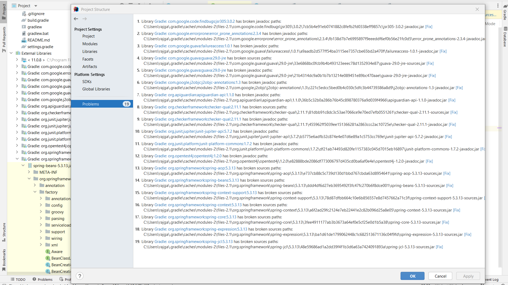
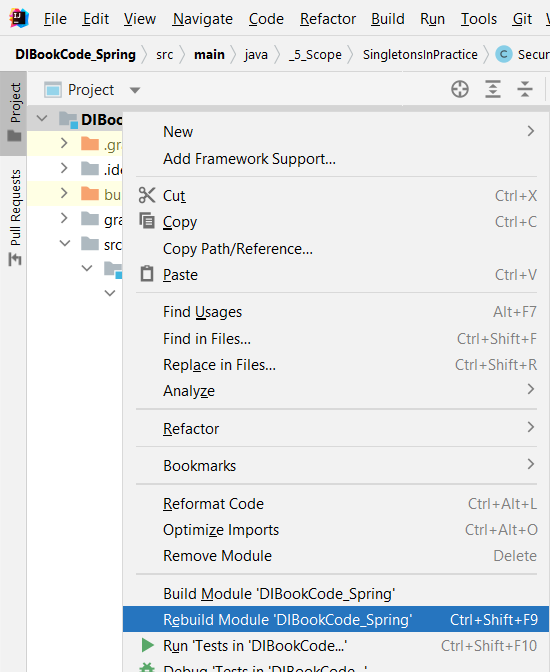
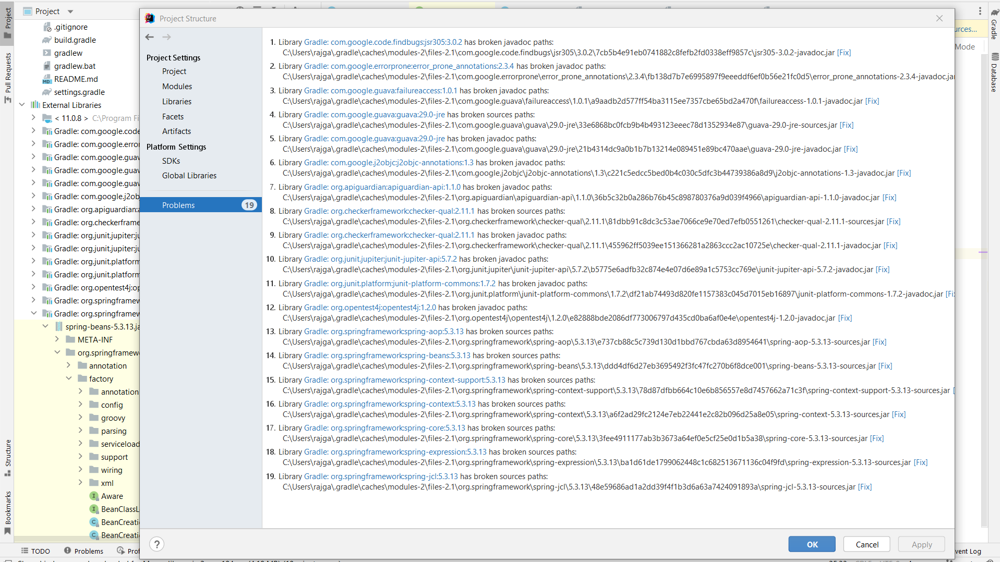
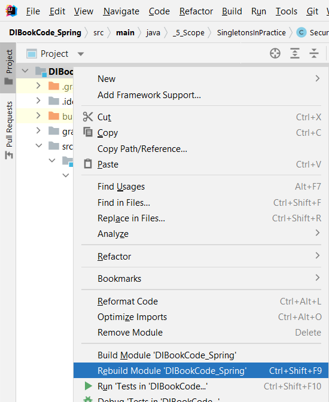
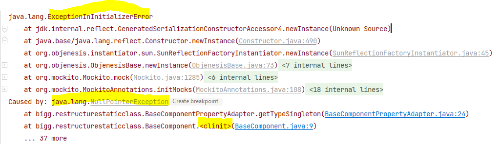

This page contains some of the common "gotchas", tips and explanations that I have come across while coding in
Java. Some of these are from my own experiences.
Others are my personal notes from the textbook Java Puzzles - Traps, Pitfalls, and Corner Cases By Bloch and
Gafter.
Link to book notes to Bloch
0) Always, for every IF, write an ELSE. In a while loop, make sure to increment the index. Whenever you are calculating squares/multiplying, be very careful about overflow.
arrays have
length, strings have length(), collections have size(). You lexicographically compare two strings using the
compareTo method, in the Comparator class you have to override the compare method, if a class implements the Comparable
interface, you have to override the compareTo method.
1) Why
does the ternary operator unexpectedly cast integers?
- If there is a mismatch in the types of the second and third operands in the ternary operator, one type
can be automatically converted to another in order to make their types equal. In the below example, for
instance, you have to cast both the second and third operand to char or else the result will be converted
to an int datatype. This is what we see in line 3.
Expand Gist 
3) Is there any difference between return null and return (ListNode<Integer>) null ? i.e. does casting null
somehow change null?
4) What is the
best way to pass int by reference?
You cannot pass
int by reference in Java. Wrapping an int into an
Integer class also does not help
because Integer is immutable. What you can do is store the integer in an int[]
array and then pass the array by reference.
5) Why do we get one extra negative number?
When representing a number in 32 bits, the highest bit is used as a sign bit, so when representing a number
like 2147483647 in binary, it is 01111...111 (31 bits that are 1's).
When we add one more to that we get:
10000...000 (31 0's) However, because of a need to avoid representing 0 twice (once as 00..0 and other time as 100..0), we wrap the number, so instead of 100..0 representing -0, this represents negative 2147483648 (not negative 2147483647 because the positive side needed to represent 0, but as the negative side doesn't, we get one "extra" negative number).
When we add one more to that we get:
10000...000 (31 0's) However, because of a need to avoid representing 0 twice (once as 00..0 and other time as 100..0), we wrap the number, so instead of 100..0 representing -0, this represents negative 2147483648 (not negative 2147483647 because the positive side needed to represent 0, but as the negative side doesn't, we get one "extra" negative number).
6) C++ : This is compiler-specific, but if you're using gcc then you can compile with -ftrapv to issue
SIGABRT when signed integral overflow occurs.
7) Is Java pass-by-value or pass-by-reference?
Strictly speaking, for references it's "pass reference by value" and for primitives it's just "pass by
value" -
Source
(From Java: The Complete Reference)
Although Java uses call-by-value to pass all arguments, the precise effect differs between whether a primitive type or a reference type is passed.
When you pass a primitive type to a method, it is passed by value. Thus, a copy of the argument is made, and what occurs to the parameter that receives the argument has no effect outside the method.
When you pass an object to a method, the situation changes dramatically, because objects are passed by what
is effectively call-by-reference. Keep in mind that when you create a variable of a class type, you are only
creating a reference to an object. Thus, when you pass this reference to a method, the parameter that
receives it will refer to the same object as that referred to by the argument. This effectively means that
objects act as if they are passed to methods by use of call-by-reference. Changes to the object inside the
method do affect the object used as an argument.
Remember: When an object reference is passed to a method, the reference itself is passed by use of
call-by-value. However, since the value being passed refers to an object, the copy of that value will still
refer to the same object that its corresponding argument does.
(From Java: The Complete Reference)
Although Java uses call-by-value to pass all arguments, the precise effect differs between whether a primitive type or a reference type is passed.
When you pass a primitive type to a method, it is passed by value. Thus, a copy of the argument is made, and what occurs to the parameter that receives the argument has no effect outside the method.
Expand Gist
Expand Gist
8) What is the difference
between a simple comment and a Javadoc comment
/* */ is a simple comment in the code.
/** */ is a Javadoc comment
/** */ is a Javadoc comment
9) What is the difference between Stack and Heap? Which kind of variable is stored where?
//TODO:
Heap vs Stack vs Perm
Space
What and where are the stack and heap?
Stack and Heap memory in Java.
Is a string stored on Stack or Heap (SO Link)
What and where are the stack and heap?
Stack and Heap memory in Java.
Is a string stored on Stack or Heap (SO Link)
10) What is the difference between a "class method" and an "instance method"?
Instance methods use an instance of a class, whereas a class method can be used with just the class name.
A class method is called a "static" method in many languages. Accessors (Getters and Setters) are instance
methods
because they are setting and getting the state of a specific instance.
Along the same lines, you also have "class variables", "instance variables", and "local variables"
On StackExchange
- Local Variables vs
Instance/Member/Field Variables vas Class/Static Variables
Along the same lines, you also have "class variables", "instance variables", and "local variables"
Local variable
: is declared inside a method/constructor or within a block (enclosed in braces) and must be initialized before use, otherwise it won't compile.Instance variable
: is declared inside a class. It's initialization is not compulsory. If omitted, it contains default value (0, 0.0, false, null, etc.). Every instance of that class (object) has it's own copy of that variable. Changes made to the variable don't reflect in other instances of that class.Class variables
: These are also known as static member variables and there's only one copy of that variable that is shared with all instances of that class. If changes are made to that variable, all other instances will see the effect of the changes. On StackOverflowOn StackExchange
Expand Gist
11) Using setters inside Constructors. When is it ok, and when is it not?
//TODO
12) Creating a test directory in Intellij and running tests in it:
- IntelliJ IDEA. Writing Tests with JUnit 5
- Use Alt + Insert to "Add a Maven Artifact Dependency"
- IntelliJ IDEA. Writing Tests with JUnit 5
- Use Alt + Insert to "Add a Maven Artifact Dependency"
13) What is the difference between CLASSPATH and Build Path:
- //TODO:
Look here - On SO, What does "Could not find or load main class" mean? Explanation about what CLASSPATH actually is on SO.
14) When to use static member classes/interfaces?
- //TODO:
Look here - On SO, What does "Could not find or load main class" mean? Explanation about what CLASSPATH actually is on SO.
//TODO
15) What is the difference between
myArray[index++] and myArray[++index]:
Suppose
In both cases the final value of
index = 0
myArray[index++]: stores element at position index and then increments
index (element is stored at myArray[0])
myArray[++index]: increments index and then stores the element at that
index. Hence the element is stored at (index + 1)
(element is stored at myArray[1])
In both cases the final value of
index will be 1. It's when the changed value of 1 is
returned that was causing the confusion.
16) Java does not have a problem with forward referencing. What this means is that the below happens to be
completely valid code in java. Note that the variable
count id defined AFTER it is used in the
varcount method. Not only does the code compile, but it also gives the correct result!
Expand Gist
18) What is System.err used for:
Every running program has these three streams
Every running program has these three streams
19) What are static initialization blocks are why do we need them?
- The static block get called each time the class is loaded. If there are multiple class-loaders that load
the class then the code gets executed multiple times.
- SO Example showing that a static block is execute only once, i.e. when the class is loaded.
- SO example showing why you would need to use a Static block
- SO Example showing that a static block is execute only once, i.e. when the class is loaded.
- SO example showing why you would need to use a Static block
21) Another Page: another page
21) Set up a new Linux VM:
- Step 1 - Youtube Link.
Do not eject the CD image. - Make VM full screen. First turn off the VM. Go to VirtualBox Manager - Settings - Display - Screen - Change Video memory to 128 MB. Restart the VM. Screen shoudl be full screen now.
- Install curl
- Install java
- Install vim
- Step 1 - Youtube Link.
Do not eject the CD image. - Make VM full screen. First turn off the VM. Go to VirtualBox Manager - Settings - Display - Screen - Change Video memory to 128 MB. Restart the VM. Screen shoudl be full screen now.
- Install curl
sudo apt install curl - Install java
sudo apt install default-jdk - Install vim
sudo apt install vim
22) What is the difference between
- The only difference between the two is the way you call the function. With String var args you can omit the array creation.
- The difference is only when invoking the method. The second form must be invoked with an array, the first form can be invoked with an array (just like the second one, yes, this is valid according to Java standard) or with a list of strings (multiple strings separated by comma) or with no arguments at all (the second one always must have one, at least null must be passed).
- SO Link
fn(String... args) vs fn(String[] args) - The only difference between the two is the way you call the function. With String var args you can omit the array creation.
- The difference is only when invoking the method. The second form must be invoked with an array, the first form can be invoked with an array (just like the second one, yes, this is valid according to Java standard) or with a list of strings (multiple strings separated by comma) or with no arguments at all (the second one always must have one, at least null must be passed).
- SO Link
23) What is the point of "final class" in Java?
- In Java, items with the
- A
- In Java, items with the
final modifier cannot be changed. This includes final classes, final
variables, and final methods. A final class cannot be extended by any other class. A final variable cannot be
reassigned another value. A final method cannot be overridden. - A
final class is simply a class that can't be extended. It does not mean that all references to
objects of the class would act as if they were declared as final.
59) Why are methods declared
- You can declare some or all of a class's methods
- You might wish to make a method
- Methods called from constructors should generally be declared
- Note that you can also declare an entire class
- Source on Oracle Java Docs here.
final? - You can declare some or all of a class's methods
final. You use the final keyword in
a method declaration to indicate that the method cannot be overridden by subclasses. - You might wish to make a method
final if it has an implementation that should not be changed and
it is critical to the consistent state of the object. - Methods called from constructors should generally be declared
final. If a constructor calls a
non-final method, a subclass may redefine that method with surprising or undesirable results. - Note that you can also declare an entire class
final. A class that is declared final
cannot be subclassed. This is particularly useful, for example, when creating an immutable class like the String
class. - Source on Oracle Java Docs here.
59.2) A variable declared as
- Source on SO.
-
final in a class cannot be instantiated/set with a value when it is being done from a setter that is being called from within a
constructor. - Source on SO.
-
61) Why can final object be modified?
- If a final variable holds a reference to an object, then the state of the object may be changed by operations on the object, but the variable will always refer to the same object.
- If a final variable holds a reference to an object, then the state of the object may be changed by operations on the object, but the variable will always refer to the same object.
final simply makes the object
reference unchangeable. The object it points to is not immutable by doing this. Source on SO.
Expand Gist
24) What does it mean when one class is said to inherit another in actual code?
-
- Also, remember that
-
Stream.Builder<T> interface inherits from the Consumer<T> interface,
(meaning, interface Builder<T> extends Consumer<T>) - Also, remember that
extends should go before implements.
24) for-each is not applicable to String
- So you cannot write:
- So you cannot write:
Expand Gist
25) What is the difference between
- SO Link
- Code example using
putIfAbsent and computeIfAbsent in Java 8 Map ?
- SO Link
- Code example using
putIfAbsent and computeIfPresent
Expand Gist
26) Java 8 has a
- SO Link
- Take special note of the method implementation here:
- Solution to this problem on LC
merge operation
- SO Link
- Take special note of the method implementation here:
default V merge(K key, V value, BiFunction<? super V, ? super V, ? extends V>remapppingFunction)
remappingFunction.apply(oldValue, value)
The oldValue is the existing value mapped to the key in the map. The
value is the
second argument passed into the merge method.
- Solution to this problem on LC
Expand Gist
27) What should I normally initialize a
-
-
- This is just the unicode for
char to? -
char temp = ''; is a compile error. You cannot do this. -
char temp = '\u0000'; - This is just the unicode for
null. SO Link.
Another SO Link.
28) Never use
== when comparing doubles or floats.
Never use it to
compare Integer, Long, Double either.
29.1) LeetCode Medium Top Interview Questions: link here
29.1) Array transformation problems:
- move-zeroes
- remove-element
- remove-duplicates-from-sorted-array
- 3sum
- move-zeroes
- remove-element
- remove-duplicates-from-sorted-array
- 3sum
31) Bit Manipulation:
- Add Binary. Description has links to other problems that use the XOR operators. - https://leetcode.com/problems/single-number/
- https://leetcode.com/problems/missing-number/
- https://leetcode.com/problems/find-the-difference/
-
- Add Binary. Description has links to other problems that use the XOR operators. - https://leetcode.com/problems/single-number/
- https://leetcode.com/problems/missing-number/
- https://leetcode.com/problems/find-the-difference/
-
31.1) Recursion Questions:
- Refer this post for an explanation of how recursion works on a high level.
- Same Tree
- Symmetric Tree
- Subtree of Another Tree
- Invert Binary Tree
- Binary Tree Maximum Path Sum with explanation.
- Refer this post for an explanation of how recursion works on a high level.
- Same Tree
- Symmetric Tree
- Subtree of Another Tree
- Invert Binary Tree
- Binary Tree Maximum Path Sum with explanation.
31.2) Traversing a Binary Tree:
- When to use Preorder, Postorder, and Inorder Binary Search Tree Traversal strategies
- There are two general techniques to traversing a tree: LC Solution
a) BFS: We scan through the tree level by level, following the order of height, from top to bottom. The nodes on higher level would be visited before the ones with lower levels.
b) DFS: In this strategy, we adopt the depth as the priority, so that one would start from a root and reach all the way down to certain leaf, and then back to root to reach another branch. The DFS strategy can further be distinguished as preorder, inorder, and postorder depending on the relative order among the root node, left node and right node.
- Binary Tree Pre Order Traversal. (From LeetCode solutions) Taking pre-order traversal as an example, in each iteration, we pop one node from the stack and visit this node. Then if this node has a right child, push its right child into the stack. If this node has a left child, push its left child into the stack. It is noteworthy that we push the right child first so that we can visit the left child first since the nature of the stack is LIFO(last in first out). After that, we can continue to the next iteration until the stack is empty.
- Binary Tree In Order Traversal (Traversal using iterative approach)
- Binary Tree Post Order Traversal. Lot of confusion on this one in the comment section about reversing the order or something. Refer this solution to see a way to do it without having to reverse the list. The explanation of what is going on is present in the comments: The algorithm is that we push each node twice onto the stack. Each time we pop a node out, if we see that there is a same node on the stack, we know that we have not done traversing yet, and need to keep pushing the current node's children onto the stack. However, if the stack is empty, or the top element is not the same as the current element, we know that we're done searching with this node, thus we can add this node to the result.
- Validate Binary Search Tree: good example of how to use iterative traversal to solve problem. Inorder traversal of a Binary Search Tree prints the nodes of the tree in the ascending order if the tree is a valid BST.
-
- When to use Preorder, Postorder, and Inorder Binary Search Tree Traversal strategies
- There are two general techniques to traversing a tree: LC Solution
a) BFS: We scan through the tree level by level, following the order of height, from top to bottom. The nodes on higher level would be visited before the ones with lower levels.
b) DFS: In this strategy, we adopt the depth as the priority, so that one would start from a root and reach all the way down to certain leaf, and then back to root to reach another branch. The DFS strategy can further be distinguished as preorder, inorder, and postorder depending on the relative order among the root node, left node and right node.
- Binary Tree Pre Order Traversal. (From LeetCode solutions) Taking pre-order traversal as an example, in each iteration, we pop one node from the stack and visit this node. Then if this node has a right child, push its right child into the stack. If this node has a left child, push its left child into the stack. It is noteworthy that we push the right child first so that we can visit the left child first since the nature of the stack is LIFO(last in first out). After that, we can continue to the next iteration until the stack is empty.
- Binary Tree In Order Traversal (Traversal using iterative approach)
- Binary Tree Post Order Traversal. Lot of confusion on this one in the comment section about reversing the order or something. Refer this solution to see a way to do it without having to reverse the list. The explanation of what is going on is present in the comments: The algorithm is that we push each node twice onto the stack. Each time we pop a node out, if we see that there is a same node on the stack, we know that we have not done traversing yet, and need to keep pushing the current node's children onto the stack. However, if the stack is empty, or the top element is not the same as the current element, we know that we're done searching with this node, thus we can add this node to the result.
- Validate Binary Search Tree: good example of how to use iterative traversal to solve problem. Inorder traversal of a Binary Search Tree prints the nodes of the tree in the ascending order if the tree is a valid BST.
-
31.3) Graph Traversal:
- Binary Tree Level Order Traversal (Doing BFS using layers. Think Kleinberg-Tardos algo)
- Find all paths between two nodes (idiot this is an NP Hard problem)
- Find the shortest path between two nodes. Remember that the shortest path between two nodes is just the BFS iteration of the graph
- Find all the shortest paths between two nodes
- Binary Tree Level Order Traversal (Doing BFS using layers. Think Kleinberg-Tardos algo)
- Find all paths between two nodes (idiot this is an NP Hard problem)
- Find the shortest path between two nodes. Remember that the shortest path between two nodes is just the BFS iteration of the graph
- Find all the shortest paths between two nodes
32) Printing out an array:
Expand Gist
32) Interconversion of types:
- Read here on Baeldung.
- Also, surrogate pairs for chars on SO.
- Read here on Baeldung.
- Also, surrogate pairs for chars on SO.
Expand Gist
32) Reversing a String:
-
- When the problem is to reverse a number, you can also do the same thing. Refer this leetcode question and look at the comments for the below code snippet.
- Addendum:
This will not initialize a StringBuilder with the String formed by the concatenation of chars at location i and j. Instead, it will create a StringBuilder with the specified
- The
-
String a_reverse = new StringBuilder(a).reverse().toString(); - When the problem is to reverse a number, you can also do the same thing. Refer this leetcode question and look at the comments for the below code snippet.
Expand Gist
StringBuilder result = new StringBuilder(s.charAt(i) + s.charAt(j)); This will not initialize a StringBuilder with the String formed by the concatenation of chars at location i and j. Instead, it will create a StringBuilder with the specified
capacity, i.e. it will treat the chars as integers and do the arithmetic sum, not the String concatenation. - The
append method of StringBuilder class will append the specified string to the end of the string.
32) What is the difference between
- Here is SO link explaining it.
-
-
- And of course there is more to it.
instanceof and getClass- Here is SO link explaining it.
-
objectWeHave instanceof classTypeWeWant tests whether the object on the LHS is an instance of the
type on the RHS or some subtype. -
getClass() == ... on the other hand, tests whether the types are identical. - And of course there is more to it.
33) You cannot iterate over a
HashSet using the fori loop. You HAVE to use the for-each loop.
34) If you sort an array of strings using
- They are sorted lexicographically.
Arrays.sort(myArray), are they sorted lexicographically, or are they sorted by their lengths? - They are sorted lexicographically.
Expand Gist
35) Write about the different ways you can use the
- The limit parameter controls the number of times the pattern is applied and therefore affects the length of the resulting array. If the limit is positive then the pattern will be applied at most limit-1 times, the array's length will be no greater than limit, and the array's last entry will contain all input beyond the last matched delimiter.
- The method signature is as follows:
- The string "boo:and:foo", for example, yields the following results with these parameters:
Regex Limit Result with separator as ":"
2 (Limit args passed in){ "boo", "and:foo" }
5 (Limit args passed in){ "boo", "and", "foo" }
-2 (Limit args passed in) { "boo", "and", "foo" }
Regex Limit Result with separator as "o"
5 (Limit args passed in) { "b", "", ":and:f", "", "" }
-2 (Limit args passed in) { "b", "", ":and:f", "", "" }
0 (Limit args passed in) { "b", "", ":and:f" }
split method in Strings - The limit parameter controls the number of times the pattern is applied and therefore affects the length of the resulting array. If the limit is positive then the pattern will be applied at most limit-1 times, the array's length will be no greater than limit, and the array's last entry will contain all input beyond the last matched delimiter.
- The method signature is as follows:
public String[] split(String regex, int limit) - The string "boo:and:foo", for example, yields the following results with these parameters:
Regex Limit Result with separator as ":"
2 (Limit args passed in){ "boo", "and:foo" }
5 (Limit args passed in){ "boo", "and", "foo" }
-2 (Limit args passed in) { "boo", "and", "foo" }
Regex Limit Result with separator as "o"
5 (Limit args passed in) { "b", "", ":and:f", "", "" }
-2 (Limit args passed in) { "b", "", ":and:f", "", "" }
0 (Limit args passed in) { "b", "", ":and:f" }
36) Running
Check problem on leetcode. Replace teh StringBuilder with just substring and you should see what I am talking about.
s.substring method within a loop is a very slow computation. Avoid if possible. Check problem on leetcode. Replace teh StringBuilder with just substring and you should see what I am talking about.
38) How to convert primitive array to List and vice-versa
Expand Gist
38.1) Interconversions between
List<String> and String[]
Expand Gist
38.2) Adding and removing from a list while iterating over the same list
- Explanation of ConcurrentModificationException on SO.
- You are able to add and remove elements from a list while you are iterating over the same list if you are using a for-i type loop.
- But if you are using a for-each style loop, adding and removing elements while you are iterating over them will throw a
- A
- But the question is, do you really want to modify the list while you are also iterating over it? Consider the following scenario. Source on SO.
- So, back to our original question, how do you remove an element from a list while iterating over the same list? Use the
- Alternatively, you can use the for-i loop and traverse the list backwards to remove the required element as shown here in this SO answer.
- Explanation of ConcurrentModificationException on SO.
- You are able to add and remove elements from a list while you are iterating over the same list if you are using a for-i type loop.
Expand Gist
ConcurrentModificationException.
Expand Gist
ConcurrentModificationException is thrown when you try to modify a Collection while iterating over it and without using the method
remove of the iterator. When you use the syntax for (Integer i : list2), an iterator is created for you. If you like to delete items from your
code you explicitly needs to iterate over an iterator or you need to loop using the old style for loop. Or you can use an Iterator. But remember that by using
an iterator, you can only remove elements from the list while you are iterating over the same list. You cannot add elements to the list. Source on SO. - But the question is, do you really want to modify the list while you are also iterating over it? Consider the following scenario. Source on SO.
Expand Gist
removeIf method introduced in Java 8.
- Alternatively, you can use the for-i loop and traverse the list backwards to remove the required element as shown here in this SO answer.
Expand Gist
38.3) Adding and removing from a
- You cannot add or remove elements from a Set/Map while iterating over it using the enhanced for loop.
- In order to remove elements from a
- Note in the below example that the way that the
- Note: there are a total of three ways that you can use the
- Note the following usage of
Set/Map while iterating over the same set/map - You cannot add or remove elements from a Set/Map while iterating over it using the enhanced for loop.
Expand Gist
Set/Map, similar to the case of List, you can use the removeIf method. - Note in the below example that the way that the
removeIf method is being called on a Set is different from the way that it is being called on
the Map. Also note the way that you iterate over a Map using the forEach method. You are doing
map.forEach((key, value) -> {System.out.println(key + ", " + value)}) and not
map.forEach(entry -> {System.out.println(entry.getKey() + ", " + entry.getValue())})
Expand Gist
removeIf method to remove elements from a Map. Source. removeIf is a method available to Collections. A
Map itself is not a Collection and does not have access to removeIf itself. But, by using: values, keySet
or entrySet, a view of the Map's contents is returned. This view implements Collection allowing removeIf to be called on it. The
Collection returned by values is backed by the Map and that changing either the Collection or the Map will
alter the other. keySet and entrySet are also both backed by the Map's contents.
Expand Gist
forEach method. forEach is a BiConsumer, which means that it accepts two values and does not return
anything. If you try to return anything, the code will not compile.
Expand Gist
38.5) Using the
- Read here on SO.
- Also the counter arg answer for the above one. Note that the
- Interesting discussion in the answers and the comments.
forEach() method vs using the for-each loop. Which should we prefer and why? - Read here on SO.
- Also the counter arg answer for the above one. Note that the
forEach() method IS NOT meant to be
the replacement of the for-each loop. So dont mix the two. Continue using the for-each loop for iterating over the Set or HashMap for now. - Interesting discussion in the answers and the comments.
41) How to store the Entries of a
- Changing order to make Map related stuff appear together. Normal order continues below.
HashMap in a List - Changing order to make Map related stuff appear together. Normal order continues below.
Expand Gist
41.1)
- Refer the following example to see. Also note that the key of the entry cannot be changed once the entry has been created. This is irrespective of whether there is a backing map or not. So the question now is, how do you use a tuple in java if this is not going to work?
- Also in the example, note the way that we are creating an Entry. It is being done using
Map.Entry returns an unmodifiable entry. You can edit the entry's value only if the entry is backed by a map. - Refer the following example to see. Also note that the key of the entry cannot be changed once the entry has been created. This is irrespective of whether there is a backing map or not. So the question now is, how do you use a tuple in java if this is not going to work?
- Also in the example, note the way that we are creating an Entry. It is being done using
Entry.new(key, value)
Expand Gist
39) A
- The
- SO Link
- And this: link
TreeMap can be sorted only on keys, not on values - The
Comparator goes into the constructor of the TreeMap. - SO Link
- And this: link
40) How exactly do you sort something in the natural order vs. something in the reverse order
- There are 2 ways in which you can change the ordering of sorting, from ascending to descending.
- One way is you change the value returned on comparison. That is, when a > b, return -1 instead of +1 (for sorting in descending). Returning +1 sorts it in ascending, returning -1 sorts it in descending.
- Second way is you change the order in which you compare the objects. That is, if b > a, return 1. That will also change the ordering from ascending to descending.
- Both ways are shown in the below examples.
- Also refer the difference between
- There are 2 ways in which you can change the ordering of sorting, from ascending to descending.
- One way is you change the value returned on comparison. That is, when a > b, return -1 instead of +1 (for sorting in descending). Returning +1 sorts it in ascending, returning -1 sorts it in descending.
- Second way is you change the order in which you compare the objects. That is, if b > a, return 1. That will also change the ordering from ascending to descending.
- Both ways are shown in the below examples.
- Also refer the difference between
Comparable and Comparator.
Expand Gist
40.1) How to implement the
- Guide to implementing the compareTo Method on Baeldung.
- SO links:
a) How to implement the Java comparable interface?
b) How do I write a compareTo method which compares objects?
c) Why should a Java class implement comparable?
- First, let us take a look at the
- Note that the interface is making use of Generics. The type parameter that is passed into the interface name here in
- So what this means is that you can make a class implement the
a) You implement
b) You implement
c) You implement
- All of the above 3 will compile and order the ComparablePerson class as intended. Point that we are trying to note over here is that the same type parameter that
is used in interface definition is also used in the
- Read this SO Answer to understand this.
- Comparable defines a 'natural ordering'. What this means is that you're defining it when one object should be considered "less than" or "greater than". Things like
- But what happens in the case of custom objects that you create? For example, the ComparablePerson object that we created above. If we need to sort a list of ComparablePerson objects, we need to specify a natural ordering to the objects, just like the
- Note that you can do the equivalent thing by defining a
- The point is that the logic has to exist somewhere. That can be:
i) in the object itself, if it's naturally comparable (implements Comparable -e.g. integers)
ii) supplied in an external comparator, as in the example above.
i) CompareTo must be in consistent with equals method e.g. if two objects are equal via equals() , there compareTo() must return zero otherwise if those objects are stored in SortedSet or SortedMap they will not behave properly.
ii) CompareTo() must throw NullPointerException if current object get compared to null object as opposed to equals() which return false on such scenario.
Comparable interface and the compareTo method? - Guide to implementing the compareTo Method on Baeldung.
- SO links:
a) How to implement the Java comparable interface?
b) How do I write a compareTo method which compares objects?
c) Why should a Java class implement comparable?
- First, let us take a look at the
Comparable interface itself:
Expand Gist
Comparable<T> is the same type
parameter that is being expected to be passed in as the args to the compareTo(T o) method. Read the comment to this answer on SO to understand that. - So what this means is that you can make a class implement the
Comparable interface in the following ways: a) You implement
Comparable<ComparablePerson>
Expand Gist
Comparable<Person>
Expand Gist
Comparable
Expand Gist
compareTo method. Depending on the type that you use for the Comparable, you can only use it
with the appropriate type of object. Comparable<ComparablePerson> can be compared only with another ComparablePerson,
Comparable<Person> will be able to be compared with other Person types, and if you use Comparable<Object>, you can compare all
Object types with it.
What is Comparable interface
- Read this SO Answer to understand this.
- Comparable defines a 'natural ordering'. What this means is that you're defining it when one object should be considered "less than" or "greater than". Things like
String and Integer already have a 'natural ordering' associated with them. For example, you can sort strings lexicographically by calling
Collections.sort() and the strings will be sorted for you. Same for Integers as well. All sorting methods in JDK will use this natural ordering by default.- But what happens in the case of custom objects that you create? For example, the ComparablePerson object that we created above. If we need to sort a list of ComparablePerson objects, we need to specify a natural ordering to the objects, just like the
String class or the Integer class. This is
done by implementing the Comparable interface inside the class. Which is what we are doing in the above examples. - Note that you can do the equivalent thing by defining a
Comparator. The difference is that the Comparator defines the ordering logic outside
the object. Maybe in a separate process I need to order the same objects by name and not id - in that case the ordering isn't necessarily a property of
the object, or differs from the objects natural ordering. In that case, could use an external Comparator. This is just like sorting a list of strings by the
length of the string, instead of sorting them lexically. - The point is that the logic has to exist somewhere. That can be:
i) in the object itself, if it's naturally comparable (implements Comparable -e.g. integers)
ii) supplied in an external comparator, as in the example above.
Some key facts to remember while you are overriding compareTo:
i) CompareTo must be in consistent with equals method e.g. if two objects are equal via equals() , there compareTo() must return zero otherwise if those objects are stored in SortedSet or SortedMap they will not behave properly.
ii) CompareTo() must throw NullPointerException if current object get compared to null object as opposed to equals() which return false on such scenario.
42) What would be faster - comparing two String using
- Using
- SO link
.equals method or computing the hash codes of
two strings and comparing those hash values to see if the two strings are equal? - Using
.equals will be faster. - SO link
43) How to create a Queue, Stack, PriorityQueue?
- Why use a deque instead of a Stack explained here on Baeldung.
- Don't do this now. Read this on the other page here.
- Create a Queue:
- Create a Stack:
- Create a PriorityQueue:
- Why use a deque instead of a Stack explained here on Baeldung.
- Don't do this now. Read this on the other page here.
- Create a Queue:
Deque<Integer> queue = new ArrayDeque<Integer>();
SO Link- Create a Stack:
Deque<Integer> stack = new ArrayDeque<Integer>();
SO Link - Create a PriorityQueue:
PriorityQueue<String> pq = new PriorityQueue<>(initialCapacity, customComparator);
SO Link
Expand Gist
43.1) How does the Deque implementation differ between LinkedList and ArrayDeque?
- The difference lies between how each of the DS implementations handle null values. When the
- There was also the confusion that if you are using the
- The difference lies between how each of the DS implementations handle null values. When the
Deque interface uses the LinkedList implementation,
you are allowed to add null values to the Deque. But if you use a ArrayDeque implementation, adding null values to the Deque is going
to throw a NullPointerException - There was also the confusion that if you are using the
ArrayDeque as a stack, and doing a push operation on it, does it shift the remaining
element in the stack to the right? So would that mean that using a LinkedList implementation in this case be better then? No. As mentioned in the
javadoc here, most ArrayDeque operations run in amortized constant time. Exceptions
include remove, removeFirstOccurrence, removeLastOccurrence, contains, iterator.remove(), and the bulk operations, all of which run in linear time. So you should continue
to use ArrayDeque implementations when using it as a stack as well (source on SO).
Expand Gist
43.2)
- Top K Frequent Words problem on LC.
- Java PriorityQueue with fixed size SO Link
- Is there a PriorityQueue implementation with fixed capacity and custom comparator? SO Link
- When should I use a TreeMap over a PriorityQueue and vice versa? SO Link
- The
a) this implementation provides O(log(n)) time for the enqueing and dequeing methods (offer, poll, remove() and add()); linear time for the remove(Object) and contains(Object) methods; and constant time for the retrieval methods (peek(), element(), and size()).
- [element() is just another version of peek(). A collection designed for holding elements prior to processing. Besides basic Collection operations, queues provide additional insertion, extraction, and inspection operations. Each of these methods exists in two forms: one throws an exception if the operation fails, the other returns a special value (either null or false, depending on the operation). Source on Queue docs on Oracle Java]
- Note that the
- Time Complexity of the
a) Operations which work on a single element are all O(ln n) comparisons except first and last which are O(1) comparisons or O(ln N) node search time.
b) comparator(), iterator(), clear(), first(), isEMpty(), size(), last(), pollFirst(), pollLast() are O(1)
c) add(), ceiling(), contains(), floor(), headSet(), higher(), lower(), remove(), subSet(), tailSet() are O(ln N)
d) clone(), equals(), hashCode(), toArray() and toString() are O(n)
- From Oracle Java Docs:
TreeSet vs PriorityQueue? Finding k maximum elements in a collection. - Top K Frequent Words problem on LC.
- Java PriorityQueue with fixed size SO Link
- Is there a PriorityQueue implementation with fixed capacity and custom comparator? SO Link
- When should I use a TreeMap over a PriorityQueue and vice versa? SO Link
- The
PriorityQueue docs on Oracle Java here states the runtime of the
PriorityQueue operations as follows: a) this implementation provides O(log(n)) time for the enqueing and dequeing methods (offer, poll, remove() and add()); linear time for the remove(Object) and contains(Object) methods; and constant time for the retrieval methods (peek(), element(), and size()).
- [element() is just another version of peek(). A collection designed for holding elements prior to processing. Besides basic Collection operations, queues provide additional insertion, extraction, and inspection operations. Each of these methods exists in two forms: one throws an exception if the operation fails, the other returns a special value (either null or false, depending on the operation). Source on Queue docs on Oracle Java]
- Note that the
TreeSet interface that is an implementation of the Set interface has additional methods that are not present in the
Set interface and that are useful. - Time Complexity of the
TreeSet methods are mentioned in this SO Post. a) Operations which work on a single element are all O(ln n) comparisons except first and last which are O(1) comparisons or O(ln N) node search time.
b) comparator(), iterator(), clear(), first(), isEMpty(), size(), last(), pollFirst(), pollLast() are O(1)
c) add(), ceiling(), contains(), floor(), headSet(), higher(), lower(), remove(), subSet(), tailSet() are O(ln N)
d) clone(), equals(), hashCode(), toArray() and toString() are O(n)
- From Oracle Java Docs:
TreeSet implementation provides guaranteed log(n) time cost for the basic operations (add, remove and contains). (Source on Oracle Java Docs).
Expand Gist
44) What does
package-javafx-util-does-not-exist
error mean?
- Don't add a library bigger than the JDK itself, when all you need, is just a Pair type. You can use
- Don't add a library bigger than the JDK itself, when all you need, is just a Pair type. You can use
Map.entry(a, b) instead, or AbstractMap.SimpleImmutableEntry, if you need support for
null or pre-Java 9 versions. Or any of the other 3rd party libraries providing a Pair type without the baggage
of a UI library/webkit engine.
45) Checked vs Unchecked Exceptions
- In Java, there are two types of exceptions: checked exceptions and un-checked exceptions. A checked exception must be handled explicitly by the code, whereas, an un-checked exception does not need to be explicitly handled.
- For checked exceptions, you either have to put a try/catch block around the code that could potentially throw the exception, or add a "throws" clause to the method, to indicate that the method might throw this type of exception (which must be handled in the calling class or above).
- Any exception that derives from
- Also read about exceptions on the Java Notes page here
- When to use Checked and when to use Unchecked exception:
- SO Link 1
- SO Link 2
- SO Link 3
- In Java, there are two types of exceptions: checked exceptions and un-checked exceptions. A checked exception must be handled explicitly by the code, whereas, an un-checked exception does not need to be explicitly handled.
- For checked exceptions, you either have to put a try/catch block around the code that could potentially throw the exception, or add a "throws" clause to the method, to indicate that the method might throw this type of exception (which must be handled in the calling class or above).
- Any exception that derives from
Exception is a checked exception, whereas a class that derives
from
RuntimeException is un-checked. RuntimeExceptions do not need to be explicitly handled by the
calling code.
- Also read about exceptions on the Java Notes page here
- When to use Checked and when to use Unchecked exception:
- SO Link 1
- SO Link 2
- SO Link 3
46) Why am I seeing weird "String not found" errors in IntelliJ when I change the JDK from 8 to 11?
- Step 1, install JDK 11 by following this SO Link.
- When prompted by the installer, also choose the third option to change the
- Next, we need to tell IntelliJ that we have a new JDK for it.
- Step 2: File -> Project Structure -> Platform Settings -> SDK -> Click on the + symbol and add the JDK. Point to the path where the JDK is installed. Should be:
- The previously empty CLASSPATH should now be filled with new files.
- How to print environment variables to the console in PowerShell here.
- How to prepend a path to the path variable:
-
- If there are multiple versions of java present on your machine, the version which is the highest in the list is going to be picked first.
- Step 1, install JDK 11 by following this SO Link.
- When prompted by the installer, also choose the third option to change the
JAVA_HOME variable
value to JDK 11. Once the installation is complete, you can check the installed cersion by running
java -version in your cmd. You can check the updated value by running echo %JAVA_HOME%.
- Next, we need to tell IntelliJ that we have a new JDK for it.
- Step 2: File -> Project Structure -> Platform Settings -> SDK -> Click on the + symbol and add the JDK. Point to the path where the JDK is installed. Should be:
C:\Program Files\AdoptOpenJDK\jdk-11.0.8.10-hotspot - The previously empty CLASSPATH should now be filled with new files.
- How to print environment variables to the console in PowerShell here.
- How to prepend a path to the path variable:
set path = C:\Program Files\Java\jdk1.8.0_281\bin;%path%; -
java -version prints the version of JVM. javac -version prints the version of java compiler.
- If there are multiple versions of java present on your machine, the version which is the highest in the list is going to be picked first.
47) How to create an in-memory/embedded database using Spring Boot + H2 that auto creates tables every time that
the application is run.
- The application.properties file should look like this:
- The database can be viewed at the foll URL:
- Make sure that the JDBC URL in the window maps to the correct URL:
- The application.properties file should look like this:
Expand Gist
http://localhost:8080/h2-console - Make sure that the JDBC URL in the window maps to the correct URL:
jdbc:h2:mem:testdb
48) What does it mean to
- Precisely what is going on over here.
catch and Exception vs throws an
Exception? - Precisely what is going on over here.
49) What is the meaning of
- Check this SO Link for explanation.
- This SO Link shows the different ways in which the
- From within a constructor, you can also use the
this when used in constructors? - Check this SO Link for explanation.
- This SO Link shows the different ways in which the
this keyword can be used. - From within a constructor, you can also use the
this keyword to call another constructor in the
same class. Doing so is called an explicit constructor invocation. (Java Doc Source)
Expand Gist
50) Why can't
- There is a difference between
- Both
- In places where you have to use both
- You can also use
this() and super() be used together in the same constructor? - There is a difference between
super() and this(). super: calls the base class constructor. If no super() is explicitly written,the compiler will add
one implicitly. this: calls current class constructor- Both
this() and super() are constructor calls. Constructor call must always be the
first statement. So you either have super() or this() as first statement. - In places where you have to use both
this() and super(), make sure that last
constructor to be called is the super() constructor. SO
Link Source. - You can also use
super to call an overridden method of a super class. In that case, the super call does not necessarily need to be the first
statement in the method body.
Expand Gist
51) How does
reduce in Stream actually work?
53) How are IP Addresses mapped to MAC Addresses?
- Kishori Sharan in Java 8 chapter on Network programming says: "This (Network Interface) layer resolves the destination hardware address from the IP address and places it in the frame header". How does it do that? - Read Link here.
- TODO
- Kishori Sharan in Java 8 chapter on Network programming says: "This (Network Interface) layer resolves the destination hardware address from the IP address and places it in the frame header". How does it do that? - Read Link here.
- TODO
54) What is Heap-Pollution?
- Read here on SO.
- Read here on SO.
55) What is a Class Loader in Java?
- SO here.
- SO here.
56.0) Intellij being Intellij I guess?
- Why am I seeing weird "library has broken clases path" error all of a sudden:  - If Intellij is showing compile errors that it cannot find the library that you have imported, one way to fix it would be to first "Reload all Gradle Projects" from the "Gradle" tab in Intellij. Once done, right click on the name of the module here, and select "Rebuild Project". That fixed the compile errors.  - But even if that fixed the compile errors, the "Project Structure" window still shows the errors. The way to fix them is as follows:
- Bug on Intellij to track feature.
- How to fix: click on the [Fix] and this should open a dropdown "Remove invalid root". That will remove the invalid path from "Libraries" tab in the above window. You can reimport the sources by following the steps here on SO on how to tell Gradle to download all sources.
- Why am I seeing weird "library has broken clases path" error all of a sudden:  - If Intellij is showing compile errors that it cannot find the library that you have imported, one way to fix it would be to first "Reload all Gradle Projects" from the "Gradle" tab in Intellij. Once done, right click on the name of the module here, and select "Rebuild Project". That fixed the compile errors.  - But even if that fixed the compile errors, the "Project Structure" window still shows the errors. The way to fix them is as follows:
- Bug on Intellij to track feature.
- How to fix: click on the [Fix] and this should open a dropdown "Remove invalid root". That will remove the invalid path from "Libraries" tab in the above window. You can reimport the sources by following the steps here on SO on how to tell Gradle to download all sources.
56) Maven related stuff in IntelliJ
- "Java file outside of source root intelliJ" error: SO Solution here.
- Show dependency hierarchy as UML here on SO
- How to view effective POM in IntelliJ here on SO.
- Maven build vs Maven install on SO here.
- Running
- The provided scope means that you intend that library to be provided by the environment in which you deploy your code. Why would you do such a thing?
- Download all the sources for the files that you have in your project: here.
- "Java file outside of source root intelliJ" error: SO Solution here.
- Show dependency hierarchy as UML here on SO
- How to view effective POM in IntelliJ here on SO.
- Maven build vs Maven install on SO here.
- Running
mvn clean install will also show the location where the resulting jar has been packaged
and placed. You can check it out by manually navigation to the specified directory. - The provided scope means that you intend that library to be provided by the environment in which you deploy your code. Why would you do such a thing?
- Download all the sources for the files that you have in your project: here.
57) Gradle related stuff in IntelliJ
- "Could Not target platform" error on SO here.
- Build error with gradle Could not find method testCompile() which leads to What's the difference between implementation, api and compile in Gradle?
- "Could Not target platform" error on SO here.
- Build error with gradle Could not find method testCompile() which leads to What's the difference between implementation, api and compile in Gradle?
57.1) Git related stuff
- Let's say, my current git log is (latest) commit3 :: commit2 :: commit1 (earliest). I reset the head to commit2. Now I want to go back to commit3, but I forget the sha-1 of commit3, so I want to look at the log , but "git log" will only show commit2, commit1, my question is how to reset to commit3 or let the log show also commit3 now? We use
- Let's say, my current git log is (latest) commit3 :: commit2 :: commit1 (earliest). I reset the head to commit2. Now I want to go back to commit3, but I forget the sha-1 of commit3, so I want to look at the log , but "git log" will only show commit2, commit1, my question is how to reset to commit3 or let the log show also commit3 now? We use
git reflog in this case (Source on SO). Note that after you run this
command you will see a "HEAD Detached" warning in IntelliJ. You can rectify that by following this SO post linked here.
It explains what a detached head really means, and what you can do about it.
58) Difference between Abstract classes and interface in java 8
- Java Doc Source here.
- An abstract class is a class that is declared abstract - it may or may not include abstract methods. Abstract classes cannot be instantiated, but they can be subclassed.
- An abstract method is a method that is declared without an implementation (without braces, and followed by a semicolon), like this:
- If a class includes abstract methods, then the class itself must be declared abstract.
- When an abstract class is subclassed, the subclass usually provides implementations for all of the abstract methods in its parent class. However, if it does not, then the subclass must also be declared abstract.
- Methods in an interface that are not declared as default or static are implicitly abstract, so the abstract modifier is not used with interface methods. (It can be used, but it is unnecessary.)
- You
- Abstract Classes Compared to Interfaces:
- Read differences here on SO.
- All methods in an interface are implicitly
- Java Doc Source here.
- An abstract class is a class that is declared abstract - it may or may not include abstract methods. Abstract classes cannot be instantiated, but they can be subclassed.
- An abstract method is a method that is declared without an implementation (without braces, and followed by a semicolon), like this:
abstract void moveTo(double deltaX, double deltaY); - If a class includes abstract methods, then the class itself must be declared abstract.
- When an abstract class is subclassed, the subclass usually provides implementations for all of the abstract methods in its parent class. However, if it does not, then the subclass must also be declared abstract.
- Methods in an interface that are not declared as default or static are implicitly abstract, so the abstract modifier is not used with interface methods. (It can be used, but it is unnecessary.)
- You
extends a abstract class. You do not implements an abstract class. - Abstract Classes Compared to Interfaces:
- Read differences here on SO.
- All methods in an interface are implicitly
public and abstract (but not final). All fields in an interface are implicitly
public,
static and final. Whereas in Abstract classes you can define private variables.
60) 'Optional.get()' without 'isPresent()' check
Expand Gist
62) What is the difference between Compiled vs Interpreted Languages?
- On SO.
- On SO.
63) What is meant by DAO Layer, Service Layer/Business Layer, Web layer?
- Pivotal Certified Spring Web Application Developer page 17
64) Java: compiled or interpreted? Compiler vs Interpreter? JIT Compiled vs Interpreted? Traditional interpreter vs Traditional Compiler vs JIT Compiler vs AOT Compiler?
- The main thing to keep in mind: JVM has, both, an interpreter as well as a compiler. With JVM, both interpreter and compiler (the JVM compiler and not the source-code compiler like javac) produce native code (aka Machine language code for the underlying physical CPU like x86) from byte code. Source on SO. So when people talk about compiling java code, there are two different compilers in picture - one is the
- Source of image on SO.
Java: compiled or interpreted
- First of all, there
is no such thing as a "compiled language" or an "interpreted language".
- Generally, both interpreters and compilers first need to parse the source code and turn it into a representation, called AST (abstract syntax tree). A compiler then turns the AST into executable code (through various transformations), while an interpreter might just directly 'interpret' the AST or sometimes compile and execute it (just-in-time compilation). The statement that there is nothing like a "compiled language" or an "interpreted language" is correct in that this has nothing to do with the language: in theory, you can write an interpreter and compiler for any language. Which one to use really depends on the use-case, scenario and environment. A compiler has the advantage that it only needs to do it's job once, regardless of how often you then execute the program. An interpreter needs to parse the source every time (or do some caching), thus you have an overhead for each execution which might take way longer than the actual execution time of the final program. On the other hand, an interpreter is more flexible (it can take into amount the current environment and thus do optimizations a compiler is not allowed to do). But the differences don't stop here, these are just two obvious points. Source on SO.
Compiler vs Interpreter
- So we first need to understand what is the difference between a compiler and an interpreter. Check Source on SO here.
- To convert source code into machine code, we use either a compiler or an interpreter. Both compilers and interpreters are used to convert a program written in a high-level language into machine code understood by computers. However, there are differences between how an interpreter and a compiler works. Look at the interpreter vs compiler table at this link and this SO answer.
- On a higher level, the difference really comes down to 'prepare the code for later execution' (compilation) or 'execute the code right now' (interpretation). Some interpreters (e.g. Unix shells) read the description one small piece at a time and act on each piece as they see it; some (e.g. Perl, Python) read the entire description, internally convert it to a simpler form and then act on that. Some interpreters (e.g. Java's JVM, or a Pentium 4 chip) only understand a very simple description language that is too tedious for humans to work with directly, so humans use compilers to convert their high-level descriptions to this language. Compilers never do the work. Interpreters always do the work.
- A compiled language is one where the program, once compiled, is expressed in the instructions of the target machine. For example, an addition "+" operation in your source code could be translated directly to the "ADD" instruction in machine code. An interpreted language is one where the instructions are not directly executed by the target machine, but instead read and executed by some other program (which normally is written in the language of the native machine). For example, the same "+" operation would be recognised by the interpreter at run-time, which would then call its own "add(a,b)" function with the appropriate arguments, which would then execute the machine code "ADD" instruction. (Note that, in the case of interpreted languages, all of this is happening during run-time.)
- Advantages of compiled languages:
a) Faster performance by directly using the native code of the target machine. It takes large amount of time to analyze the source code but the overall execution time is comparatively faster.
b) Opportunity to apply quite powerful optimisations during the compile stage
- Disadvantages of compiled languages:
a) Generates intermediate object code which further requires linking, hence requires more memory.
b) It generates the error message only after scanning the whole program. Hence debugging is comparatively hard.
- Advantages/disadvantages of interpreted languages:
a) Easier to implement (writing good compilers is very hard!!)
b) No need to run a compilation stage: can execute code directly "on the fly". It takes less amount of time to analyze the source code and start running it, but the overall execution time is slower.
c) Can be more convenient for dynamic languages
d) No intermediate object code is generated, hence are memory efficient.
e) Continues translating the program until the first error is met, in which case it stops. Hence debugging is easy.
Note that modern techniques such as bytecode compilation add some extra complexity - what happens here is that the compiler targets a "virtual machine" which is not the same as the underlying hardware. These virtual machine instructions can then be compiled again at a later stage to get native code (e.g. as done by the Java JVM JIT compiler). Source on SO here.
- You can now see the problem with a purely interpreted language. A traditional compiler is translating all the source code to machine code before the execution of the program. Hence at runtime, all the CPU has to do is run the machine code instructions (for eg. ADD). On the other hand, for a purely interpreted language, the source code needs to be translated to the machine code for every instruction - at runtime. If an instruction is present in a loop, the interpreter might end up translating the same source code to machine code millions of time. This is a huge overhead.
JIT Compilers
So that brings us to the solution - that is : Just-In-Time (JIT) Compilation.
- Source on SO here.
- An interpreter pretty much converts each byte-code instruction to corresponding native instruction by looking up a predefined JVM-instruction to machine instruction mapping (see below pic). Interestingly, a further speedup in execution can be achieved, if we take a section of byte-code and convert it into machine code - because considering a whole logical section often provides rooms for optimization as opposed to converting (interpreting) each line in isolation (to machine instruction). This very act of converting a section of byte-code into (presumably optimized) machine instruction is called compiling (in the current context). When the compilation is done at run-time, the compiler is called JIT compiler. Since Java designer went for (hardware & OS) portability, they had chosen interpreter architecture (as opposed to c style compiling, assembling, and linking). However, in order to achieve more speed up, a compiler is also optionally added to a JVM. Nonetheless, as a program goes on being interpreted (and executed in physical CPU) "hotspot"s are detected by JVM and statistics are generated. Consequently, using statistics from interpreter, those sections become candidate for compilation (optimized native code). It is in fact done on-the-fly (thus JIT compiler) and the compiled machine instructions are used subsequently (rather than being interpreted). In a natural way, JVM also caches such compiled pieces of code.
Bringing it all together with a Java JIT Compiler
- Source
on SO.
- Java implementations typically use a two-step compilation process. Java source code is compiled down to bytecode by the Java compiler. The bytecode is executed by a Java Virtual Machine (JVM). Modern JVMs use a technique called Just-in-Time (JIT) compilation to compile the bytecode to native instructions understood by hardware CPU on the fly at runtime. Some implementations of JVM may choose to interpret the bytecode instead of JIT compiling it to machine code, and running it directly. While this is still considered an "interpreter," it's quite different from interpreters that read and execute the high level source code (i.e. in this case, Java source code is not interpreted directly, the bytecode, output of Java compiler, is). It is technically possible to compile Java down to native code ahead-of-time and run the resulting binary. It is also possible to interpret the Java code directly.
- To summarize, depending on the execution environment, bytecode can be:
a) compiled ahead of time and executed as native code (similar to most C++ compilers)
b) compiled just-in-time and executed
c) interpreted
d) directly executed by a supported processor (bytecode is the native instruction set of some CPUs)
JIT Compilers vs AOT Compilers
- Source on SO here.
References:
1) Is Java a Compiled or an Interpreted programming language ?
2) How does an interpreter/compiler work
3) Compiled vs. Interpreted Languages
4) JIT vs Interpreters
5) Understanding the differences: traditional interpreter, JIT compiler, JIT interpreter and AOT compiler
6) What is the industry definition of an interpreter (as opposed to a compiler)?
7) The difference between compiler and interpreter
8) Exact difference between Compiler and Interpreter?
9) There is no such thing as a "compiled language" or "interpreted language"
10) What is the difference between implementing a compiler and an interpreter?
- The main thing to keep in mind: JVM has, both, an interpreter as well as a compiler. With JVM, both interpreter and compiler (the JVM compiler and not the source-code compiler like javac) produce native code (aka Machine language code for the underlying physical CPU like x86) from byte code. Source on SO. So when people talk about compiling java code, there are two different compilers in picture - one is the
javac compiler
converting the .java files to .class files and then there is the compiler in the JVM itself that is converting
parts of the bytecode to native instructions that can be run on the CPU/machine code (This is the
JIT-Compilation that people refer to). - Source of image on SO.
- Generally, both interpreters and compilers first need to parse the source code and turn it into a representation, called AST (abstract syntax tree). A compiler then turns the AST into executable code (through various transformations), while an interpreter might just directly 'interpret' the AST or sometimes compile and execute it (just-in-time compilation). The statement that there is nothing like a "compiled language" or an "interpreted language" is correct in that this has nothing to do with the language: in theory, you can write an interpreter and compiler for any language. Which one to use really depends on the use-case, scenario and environment. A compiler has the advantage that it only needs to do it's job once, regardless of how often you then execute the program. An interpreter needs to parse the source every time (or do some caching), thus you have an overhead for each execution which might take way longer than the actual execution time of the final program. On the other hand, an interpreter is more flexible (it can take into amount the current environment and thus do optimizations a compiler is not allowed to do). But the differences don't stop here, these are just two obvious points. Source on SO.
- To convert source code into machine code, we use either a compiler or an interpreter. Both compilers and interpreters are used to convert a program written in a high-level language into machine code understood by computers. However, there are differences between how an interpreter and a compiler works. Look at the interpreter vs compiler table at this link and this SO answer.
- On a higher level, the difference really comes down to 'prepare the code for later execution' (compilation) or 'execute the code right now' (interpretation). Some interpreters (e.g. Unix shells) read the description one small piece at a time and act on each piece as they see it; some (e.g. Perl, Python) read the entire description, internally convert it to a simpler form and then act on that. Some interpreters (e.g. Java's JVM, or a Pentium 4 chip) only understand a very simple description language that is too tedious for humans to work with directly, so humans use compilers to convert their high-level descriptions to this language. Compilers never do the work. Interpreters always do the work.
- A compiled language is one where the program, once compiled, is expressed in the instructions of the target machine. For example, an addition "+" operation in your source code could be translated directly to the "ADD" instruction in machine code. An interpreted language is one where the instructions are not directly executed by the target machine, but instead read and executed by some other program (which normally is written in the language of the native machine). For example, the same "+" operation would be recognised by the interpreter at run-time, which would then call its own "add(a,b)" function with the appropriate arguments, which would then execute the machine code "ADD" instruction. (Note that, in the case of interpreted languages, all of this is happening during run-time.)
- Advantages of compiled languages:
a) Faster performance by directly using the native code of the target machine. It takes large amount of time to analyze the source code but the overall execution time is comparatively faster.
b) Opportunity to apply quite powerful optimisations during the compile stage
- Disadvantages of compiled languages:
a) Generates intermediate object code which further requires linking, hence requires more memory.
b) It generates the error message only after scanning the whole program. Hence debugging is comparatively hard.
- Advantages/disadvantages of interpreted languages:
a) Easier to implement (writing good compilers is very hard!!)
b) No need to run a compilation stage: can execute code directly "on the fly". It takes less amount of time to analyze the source code and start running it, but the overall execution time is slower.
c) Can be more convenient for dynamic languages
d) No intermediate object code is generated, hence are memory efficient.
e) Continues translating the program until the first error is met, in which case it stops. Hence debugging is easy.
Note that modern techniques such as bytecode compilation add some extra complexity - what happens here is that the compiler targets a "virtual machine" which is not the same as the underlying hardware. These virtual machine instructions can then be compiled again at a later stage to get native code (e.g. as done by the Java JVM JIT compiler). Source on SO here.
- You can now see the problem with a purely interpreted language. A traditional compiler is translating all the source code to machine code before the execution of the program. Hence at runtime, all the CPU has to do is run the machine code instructions (for eg. ADD). On the other hand, for a purely interpreted language, the source code needs to be translated to the machine code for every instruction - at runtime. If an instruction is present in a loop, the interpreter might end up translating the same source code to machine code millions of time. This is a huge overhead.
- Source on SO here.
- An interpreter pretty much converts each byte-code instruction to corresponding native instruction by looking up a predefined JVM-instruction to machine instruction mapping (see below pic). Interestingly, a further speedup in execution can be achieved, if we take a section of byte-code and convert it into machine code - because considering a whole logical section often provides rooms for optimization as opposed to converting (interpreting) each line in isolation (to machine instruction). This very act of converting a section of byte-code into (presumably optimized) machine instruction is called compiling (in the current context). When the compilation is done at run-time, the compiler is called JIT compiler. Since Java designer went for (hardware & OS) portability, they had chosen interpreter architecture (as opposed to c style compiling, assembling, and linking). However, in order to achieve more speed up, a compiler is also optionally added to a JVM. Nonetheless, as a program goes on being interpreted (and executed in physical CPU) "hotspot"s are detected by JVM and statistics are generated. Consequently, using statistics from interpreter, those sections become candidate for compilation (optimized native code). It is in fact done on-the-fly (thus JIT compiler) and the compiled machine instructions are used subsequently (rather than being interpreted). In a natural way, JVM also caches such compiled pieces of code.
- Java implementations typically use a two-step compilation process. Java source code is compiled down to bytecode by the Java compiler. The bytecode is executed by a Java Virtual Machine (JVM). Modern JVMs use a technique called Just-in-Time (JIT) compilation to compile the bytecode to native instructions understood by hardware CPU on the fly at runtime. Some implementations of JVM may choose to interpret the bytecode instead of JIT compiling it to machine code, and running it directly. While this is still considered an "interpreter," it's quite different from interpreters that read and execute the high level source code (i.e. in this case, Java source code is not interpreted directly, the bytecode, output of Java compiler, is). It is technically possible to compile Java down to native code ahead-of-time and run the resulting binary. It is also possible to interpret the Java code directly.
- To summarize, depending on the execution environment, bytecode can be:
a) compiled ahead of time and executed as native code (similar to most C++ compilers)
b) compiled just-in-time and executed
c) interpreted
d) directly executed by a supported processor (bytecode is the native instruction set of some CPUs)
References:
1) Is Java a Compiled or an Interpreted programming language ?
2) How does an interpreter/compiler work
3) Compiled vs. Interpreted Languages
4) JIT vs Interpreters
5) Understanding the differences: traditional interpreter, JIT compiler, JIT interpreter and AOT compiler
6) What is the industry definition of an interpreter (as opposed to a compiler)?
7) The difference between compiler and interpreter
8) Exact difference between Compiler and Interpreter?
9) There is no such thing as a "compiled language" or "interpreted language"
10) What is the difference between implementing a compiler and an interpreter?
63) Why do we have to add the suffix
- Source on SO.
f after we declare a variable of type float? - Source on SO.
Expand Gist
64) Will browser download image twice if it's used in both an image's src as well as a div's background-image?
- Source on SO.
- Browsers are pretty smart when it comes to caching. It should only ask for it once. Additionally when it asks the server for an image, it usually sends with the request for the image, a couple of headers that tell the server.. Hey, I want this image, but I got one already that has these attributes that you told me about it last time you sent it to me. The server can then respond with a
- Source on SO.
- Browsers are pretty smart when it comes to caching. It should only ask for it once. Additionally when it asks the server for an image, it usually sends with the request for the image, a couple of headers that tell the server.. Hey, I want this image, but I got one already that has these attributes that you told me about it last time you sent it to me. The server can then respond with a
200 meaning it's different content 304 meaning the
one you have is the same, so I won't send it again, use the one you got.
65) Alternative to clearfix hack in HTML?
-
-
display: flow-root
66.1) Can overridden methods return different types?
- Source on SO.
- Yes it may differ but there are some limitations. Before Java 5.0, when you override a method, both parameters and return type must match exactly. Java 5.0 it introduces a new facility called covariant return type. You can override a method with the same signature but return a subclass of the object returned. In other words, a method in a subclass can return an object whose type is a subclass of the type returned by the method with the same signature in the superclass.
- Source on SO.
- Yes it may differ but there are some limitations. Before Java 5.0, when you override a method, both parameters and return type must match exactly. Java 5.0 it introduces a new facility called covariant return type. You can override a method with the same signature but return a subclass of the object returned. In other words, a method in a subclass can return an object whose type is a subclass of the type returned by the method with the same signature in the superclass.
66.2) Can we override a method by passing subclass of the parameter used in super class method?
- No, we cannot. Source on SO.
- In the below example, you can see that we are trying to override the eat method in the Dog class by passing in a subclass of the Food class, Flesh. But the method is NOT overridden. You can test this by adding a
- So we set out to override methods, but we ended up overloading methods.
- And hence we get the behavior that we are now showing in the below snippet.
- No, we cannot. Source on SO.
- In the below example, you can see that we are trying to override the eat method in the Dog class by passing in a subclass of the Food class, Flesh. But the method is NOT overridden. You can test this by adding a
@Override annotation on top of the eat() method in the Dog class,
and the compiler will throw an error saying that "Method does not override method from its superclass". - So we set out to override methods, but we ended up overloading methods.
- And hence we get the behavior that we are now showing in the below snippet.
Expand Gist
66.3) How can we trigger different method selection based on the parameter's real type?
- Source on SO. Excellent answers. Go through all of them.
- In the following code snippet, I expect the method selection to take into consideration the real (not the declared) parameter type. Hence the expectation is that following code would have printed foo(Object o), foo("foobar"), foo(12). But instead it prints foo(Object o) three times. What am I missing?
- Your expectation is wrong. In Java, dynamic method dispatch happens only for the object the method is called on, not for the parameter types of overloaded methods.
- Citing the Java Language Specification: When a method is invoked (S15.12), the number of actual arguments (and any explicit type arguments) and the compile-time types of the arguments are used, at compile time, to determine the signature of the method that will be invoked (S15.12.2). If the method that is to be invoked is an instance method, the actual method to be invoked will be determined at run time, using dynamic method lookup (S15.12.4).
- The last statement is a bit confusing. Can you clarify it further.
- Sure. The compile time type of the method parameters is used to determine the signature of the method to be called, in this case foo(Object). At runtime, the class of the object the method is called on determines which implementation of that method is called, taking into account that it may be an instance of a subclass of the declared type that overrides the method.
- Rewriting the above code showing this in action:
- Ability to dispatch a call to a method based on types of arguments is called multiple dispatch. In Java this is done with Visitor pattern. However, since you're dealing with
Integers and Strings, you cannot easily incorporate this pattern (you just cannot modify these classes). Source on SO.
- The key to understanding this is that the test for which method or constructor is most specific does not use the actual parameters: the parameters appearing in the invocation. They are used only to determine which overloadings are applicable. Once the compiler determines which overloadings are applicable and accessible, it selects the most specific overloading, using only the formal parameters: the parameters appearing in the declaration. Source on SO.
- We can also use Generics to solve this problem as shown in this SO answer.
- Source on SO. Excellent answers. Go through all of them.
- In the following code snippet, I expect the method selection to take into consideration the real (not the declared) parameter type. Hence the expectation is that following code would have printed foo(Object o), foo("foobar"), foo(12). But instead it prints foo(Object o) three times. What am I missing?
Expand Gist
- Citing the Java Language Specification: When a method is invoked (S15.12), the number of actual arguments (and any explicit type arguments) and the compile-time types of the arguments are used, at compile time, to determine the signature of the method that will be invoked (S15.12.2). If the method that is to be invoked is an instance method, the actual method to be invoked will be determined at run time, using dynamic method lookup (S15.12.4).
- The last statement is a bit confusing. Can you clarify it further.
- Sure. The compile time type of the method parameters is used to determine the signature of the method to be called, in this case foo(Object). At runtime, the class of the object the method is called on determines which implementation of that method is called, taking into account that it may be an instance of a subclass of the declared type that overrides the method.
- Rewriting the above code showing this in action:
Expand Gist
- The key to understanding this is that the test for which method or constructor is most specific does not use the actual parameters: the parameters appearing in the invocation. They are used only to determine which overloadings are applicable. Once the compiler determines which overloadings are applicable and accessible, it selects the most specific overloading, using only the formal parameters: the parameters appearing in the declaration. Source on SO.
- We can also use Generics to solve this problem as shown in this SO answer.
66.4) Also read this:
- Calling a super method which calls an overridden method
- Calling a super method which calls an overridden method
67) You can create overloaded methods and constructors just by changing the order of the parameters in the
method/constructor declaration
- Constructor overloading best practice on SO.
- Yes, this is valid code somehow.
- Constructor overloading best practice on SO.
- Yes, this is valid code somehow.
Expand Gist
67) Can an
- Yes, when we define a class to be an Abstract Class it cannot be instantiated but that does not mean an Abstract class cannot have a constructor. Each abstract class must have a concrete subclass which will implement the abstract methods of that abstract class.
- When we create an object of any subclass all the constructors in the corresponding inheritance tree are invoked in the top to bottom approach. The same case applies to abstract classes. Though we cannot create an object of an abstract class, when we create an object of a class which is concrete and subclass of the abstract class, the constructor of the abstract class is automatically invoked. Hence we can have a constructor in abstract classes.
abstract class have a constructor? And if yes, what purpose does it satisfy? - Yes, when we define a class to be an Abstract Class it cannot be instantiated but that does not mean an Abstract class cannot have a constructor. Each abstract class must have a concrete subclass which will implement the abstract methods of that abstract class.
- When we create an object of any subclass all the constructors in the corresponding inheritance tree are invoked in the top to bottom approach. The same case applies to abstract classes. Though we cannot create an object of an abstract class, when we create an object of a class which is concrete and subclass of the abstract class, the constructor of the abstract class is automatically invoked. Hence we can have a constructor in abstract classes.
68) What is an
-
EnumSet and what is it used for? -
68) What is bfcache
- Freakin' awesome: read here.
- Freakin' awesome: read here.
69) Can I spawn new Threads in JSP?
- Source on SO.
- It is absolutely not a good idea to manually spawn unmanaged threads in a JSP/Servlet web application. For sure not when done in the JSP side as it does not fit JSP's responsibilities in any way.
- Also there are now Concurrency Utils that enable you to achieve this so that you do not have to do this manually. Source on SO.
- Source on SO.
- It is absolutely not a good idea to manually spawn unmanaged threads in a JSP/Servlet web application. For sure not when done in the JSP side as it does not fit JSP's responsibilities in any way.
- Also there are now Concurrency Utils that enable you to achieve this so that you do not have to do this manually. Source on SO.
70) Where to place and how to read configuration resource files in servlet based application?
- Answer by BalusC explaining different ways that you can access a file from your code. Do you understand what a 'classpath' actually means now?
- Answer by BalusC explaining different ways that you can access a file from your code. Do you understand what a 'classpath' actually means now?
71) How to make sure that the response/data is not cached in case of a
- Read this SO Answer.
- What does this even mean:
HttpServletResponse- Read this SO Answer.
- What does this even mean:
Expand Gist
72) Suppose we use
- Source on SO.
-
- But where is the property stored. You haven't understood how java programs work. When you run a Java program, you are actually starting a JVM instance. That instance will have its own System properties. That is where you put your property. When you run another program, that will have its own System properties. So, you cannot expect a property which you set in one JVM instance to be accessible from another JVM instance!
- When you start a Java process a separate JVM instance is created that runs your process. Also since props is a Class variable(not an instance variable) just one copy of it will be present in the corresponding Class instance which will be set when that class is loaded. Now this is under the assumption that you do not have any of your custom class loaders in which case behavior might be different. But for simplistic scenario you System.setProperty() and System.getProperty() will set system properties that you can access via any class running as a part of that java process(JVM).
System.setProperty to store a property. Where is the property stored? But then
you also say that once you have saved a property using setproperty, you can access that property
anywhere in the entire java application. How is that fucking possible? - Source on SO.
-
System class has a static member variable named props which is of the
type Properties. Properties extends HashTable. The HashTable
is defined as Hashtable<Object,Object>. But note that each key and it's corresponding value
in the property list is a String. So this should answer the first part of your question about where the
property is saved, like literally. It is stored in a HashTable- But where is the property stored. You haven't understood how java programs work. When you run a Java program, you are actually starting a JVM instance. That instance will have its own System properties. That is where you put your property. When you run another program, that will have its own System properties. So, you cannot expect a property which you set in one JVM instance to be accessible from another JVM instance!
- When you start a Java process a separate JVM instance is created that runs your process. Also since props is a Class variable(not an instance variable) just one copy of it will be present in the corresponding Class instance which will be set when that class is loaded. Now this is under the assumption that you do not have any of your custom class loaders in which case behavior might be different. But for simplistic scenario you System.setProperty() and System.getProperty() will set system properties that you can access via any class running as a part of that java process(JVM).
74) What happens when you left shift a -ve number? Can it become +ve?
- Yes, with the correct bits, a -ve number will become +ve
- Yes, with the correct bits, a -ve number will become +ve
Expand Gist
75) What is the difference between
-
-
- Difference between
>> and >>> ? -
>> stands for right-shift with sign-extension -
>>> stands for right-shift with zero-extension - Difference between
>> and >>> here on SO.
Expand Gist
76) What is String Interning?
- Read this SO answer to understand how interning works
- Java String Pool on Baeldung.
- Read this SO answer to understand how interning works
- Java String Pool on Baeldung.
Expand Gist
77) What is the difference between [ab] and (a|b) in regex?
- Check here on SO and here.
-
- Check here on SO and here.
-
[ab] matches one character (a or b) and doesn't capture the group. (a|b) captures a or b, and matches it. In this case, no big difference, but
in more complex cases [] can only contain characters and character classes, while (|) can contain arbitrarily complex regex's on either side of
the pipe.
78) Is a
- Yes, there could be performance gains of using a
- Read this answer on SO. Also, a bit below this is written: javac implements
- This SO answer explains the difference between lookupswitch and tableswitch. The linked answers on that page also contains some good answers.
-
switch statement faster than an if-else block in java? - Yes, there could be performance gains of using a
switch instead of an if-else block. - Read this answer on SO. Also, a bit below this is written: javac implements
switch several
different ways, some more efficient than others. In general, the efficiency will be no worse than a straight-forward "if ladder", but there are enough variations
(especially with the JITC) that it's hard to be much more precise than that. - This SO answer explains the difference between lookupswitch and tableswitch. The linked answers on that page also contains some good answers.
-
switch in the case of String was added only in Java 7. Using strings for switches requires calculating the hash value of the string. Hence,
using switch for string might not always be the fastest way. Check this SO answer for details.
79) How to properly manage
- Check this link on SO to see how to validate dates in Java.
- This is a link to Oracle Java Tutorials on Date and Time.
Date in your java classes?- Check this link on SO to see how to validate dates in Java.
- This is a link to Oracle Java Tutorials on Date and Time.
80) TF is CORS?
- Add the following below your
- Chrome Websockets CORS policy says: the server enforces an Origin. The Origin HTTP header is set by the browser to the origin of the HTML page containing the JavaScript that is opening the WebSocket connection. A server MAY check that header and deny. But since you say other browsers are working (which?), this is unlikely.
- Enabling CORS for a RESTful webservice. Docs on Spring site
- CORS in Spring on Baeldung
- CORS on Mozilla
- Origin is not allowed by Access-Control-Allow-Origin on SO.
- Why does my JavaScript code receive a "No 'Access-Control-Allow-Origin' header is present on the requested resource" error, while Postman does not?
- Excellent video by Steve Griffith on YT explaining how CORS works
- YT video explanation about how CORS works using AWS
- CORS Setup in a Spring Boot application
- Spring Boot tutorial on how to use CORS in your Spring application
- And of course there is an entire book on it
- Question with useful snapshots on SO
- But apparently, there is no same-origin policy for websockets?
- Good link on how to set cookies for cross-origin requests on SO.
- Note the following: You cannot set or read cookies on CORS requests through JavaScript. Although CORS allows cross-origin requests, the cookies are still subject to the browser's same-origin policy, which means only pages from the same origin can read/write the cookie.
- How can I setup my server and frontend in order for cookies to be shared across domains: answer, including the basics like difference between site and domain, on SO
- Personal Local Env testing: What all is mandatory for a CORS cookie to work (atleast in localhost for now)?
- Having a CORS cookie as
- Setting
-
- From the FrontEnd, this is how we are initialising the process:
- This is what the backend code looks like so that we can handle the request correctly:
- Controller:
- Adding cookie to the response:
- Add the following below your
@RestController annotation:
@CrossOrigin(origins = "*", allowedHeaders = "*") (but you should not be using wildcard characters while specifying origins because that might
cause browsers to ignore the annotation altogether. Instead specify the exact domain.) - Chrome Websockets CORS policy says: the server enforces an Origin. The Origin HTTP header is set by the browser to the origin of the HTML page containing the JavaScript that is opening the WebSocket connection. A server MAY check that header and deny. But since you say other browsers are working (which?), this is unlikely.
- Enabling CORS for a RESTful webservice. Docs on Spring site
- CORS in Spring on Baeldung
- CORS on Mozilla
- Origin is not allowed by Access-Control-Allow-Origin on SO.
- Why does my JavaScript code receive a "No 'Access-Control-Allow-Origin' header is present on the requested resource" error, while Postman does not?
- Excellent video by Steve Griffith on YT explaining how CORS works
- YT video explanation about how CORS works using AWS
- CORS Setup in a Spring Boot application
- Spring Boot tutorial on how to use CORS in your Spring application
- And of course there is an entire book on it
- Question with useful snapshots on SO
- But apparently, there is no same-origin policy for websockets?
- Good link on how to set cookies for cross-origin requests on SO.
- Note the following: You cannot set or read cookies on CORS requests through JavaScript. Although CORS allows cross-origin requests, the cookies are still subject to the browser's same-origin policy, which means only pages from the same origin can read/write the cookie.
withCredentials only means that any cookies set by the
remote host are sent to that remote host. You will have to set the cookie from the remote server by using the Set-Cookie header. - How can I setup my server and frontend in order for cookies to be shared across domains: answer, including the basics like difference between site and domain, on SO
- Personal Local Env testing: What all is mandatory for a CORS cookie to work (atleast in localhost for now)?
- Having a CORS cookie as
HttpOnly is not mandatory for CORS. - Setting
SameSite=Lax also works on localhost. But it should not work on actual servers. Also note that: If no SameSite attribute is set then the cookie is
treated as Lax. -
- From the FrontEnd, this is how we are initialising the process:
Expand Gist
- Controller:
Expand Gist
Expand Gist
81) Why does sockJS add a '/info' to a given websocket url path?
- Because it is in the official docs, as shown here on SO.
- YT tutorials on WebSockets: From Zero to Hero with Spring WebSocket, Deep dive into Spring WebSockets
- Because it is in the official docs, as shown here on SO.
- YT tutorials on WebSockets: From Zero to Hero with Spring WebSocket, Deep dive into Spring WebSockets
82) What is mixed content in a browser?
- Explained on MDN.
- When you visit a secure web page (that is, using HTTPS), your connection is encrypted with SSL. If the HTTPS page also includes content retrieved through a regular HTTP connection, the connection is only partially encrypted. This is called a web page with mixed content. By default, mixed content is blocked in all major browsers. (Source)
- I have not found a way that can display mixed content in browsers. Is it even possible?
- I still have to try this though: How to get Chrome to allow mixed content?
- Since your application is serving the content over HTTPS, its a must to access other resources also through HTTPS to solve the mixed content issue. The best way to approach is to use a proxy. For that you can either setup a proxy manually using EC2 or using a managed service like AWS CloudFront or AWS API Gateway depending on the nature of the resources you access. If its a REST API use API Gateway and if its more of content (JS, CSS, HTML and other files & etc.) use CloudFront (Source)
- A secure page (HTTPS) cannot get any data from an insecure page/request (HTTP) without a server-side solution.
- You cannot make an AJAX request to an https page if you are currently in http because of the Same Origin Policy. The host, port and scheme (protocol) must be the same in order for the AJAX request to work. You can either make sure that the originating page is on the same host and scheme or implement CORS (cross-origin resource sharing) on the target domain to permit this particular request. (But then you are going to run into the mixed content problem again).
- Alternatively to this, you can add this to your header:
- Same thing about adding the meta tag explained on MDN. The HTTP Content-Security-Policy (CSP) upgrade-insecure-requests directive instructs user agents to treat all of a site's insecure URLs (those served over HTTP) as though they have been replaced with secure URLs (those served over HTTPS). This directive is intended for web sites with large numbers of insecure legacy URLs that need to be rewritten.
- Tried installing the nightly build of firefox because it has
- Can I use HTTPS on localhost?
-
- Explained on MDN.
- When you visit a secure web page (that is, using HTTPS), your connection is encrypted with SSL. If the HTTPS page also includes content retrieved through a regular HTTP connection, the connection is only partially encrypted. This is called a web page with mixed content. By default, mixed content is blocked in all major browsers. (Source)
- I have not found a way that can display mixed content in browsers. Is it even possible?
- I still have to try this though: How to get Chrome to allow mixed content?
- Since your application is serving the content over HTTPS, its a must to access other resources also through HTTPS to solve the mixed content issue. The best way to approach is to use a proxy. For that you can either setup a proxy manually using EC2 or using a managed service like AWS CloudFront or AWS API Gateway depending on the nature of the resources you access. If its a REST API use API Gateway and if its more of content (JS, CSS, HTML and other files & etc.) use CloudFront (Source)
- A secure page (HTTPS) cannot get any data from an insecure page/request (HTTP) without a server-side solution.
- You cannot make an AJAX request to an https page if you are currently in http because of the Same Origin Policy. The host, port and scheme (protocol) must be the same in order for the AJAX request to work. You can either make sure that the originating page is on the same host and scheme or implement CORS (cross-origin resource sharing) on the target domain to permit this particular request. (But then you are going to run into the mixed content problem again).
- Alternatively to this, you can add this to your header:
<meta http-equiv="Content-Security-Policy" content="upgrade-insecure-requests">
Source. - Same thing about adding the meta tag explained on MDN. The HTTP Content-Security-Policy (CSP) upgrade-insecure-requests directive instructs user agents to treat all of a site's insecure URLs (those served over HTTP) as though they have been replaced with secure URLs (those served over HTTPS). This directive is intended for web sites with large numbers of insecure legacy URLs that need to be rewritten.
- Tried installing the nightly build of firefox because it has
security.mixed_content.upgrade_display_content enabled which apparently allows FF to display
mixed content as shown here on MDN site. - Can I use HTTPS on localhost?
-
83) An inner class can either extend a single class or implement a single interface. Remember that you
extend an abstract class and can either
extend or implement an interface. You do not implement a abstract class.
84) Why would you want to use
- Think of
- Consider the following example: you have a brand of a car, say Ferrari CX. There is a base price associated with the car. This base price is going to be constant across all instantiations of the same car. In that case, you would want to declare the base price as a
- (Source) The general rule is: Avoid static. However:
a) The main method must be static. When the program first starts, there are no instances (objects) yet to talk to, so you cannot start from an instance method. However, the classes themselves have been created, so static methods can be used.
b) When you want to have a variable that describes something about the class itself, not the individual objects of that class, make it static.
c) When you want to have a variable that always has the same value for every object of the class, forever and ever, make it static.
d) If you have a method that does not use any instance variables or instance methods, you should probably make it static.
- Source Key points to remember when using a
- static methods in Java are resolved at compile time. Since method overriding is part of Runtime Polymorphism, so static methods can't be overridden
- abstract methods can't be static
- static methods cannot use this or super keywords
- The following combinations of the instance, class methods and variables are valid:
a) Instance methods can directly access both instance methods and instance variables
b) Instance methods can also access static variables and static methods directly
c) static methods can access all static variables and other static methods
d) static methods cannot access instance variables and instance methods directly; they need some object reference to do so
- Question: when you use the
static variables in a class? - Think of
static variables as metadata, i.e., data about data. What this means is that if you want to store information about the class itself, in that case
you would be better off using static variables. - Consider the following example: you have a brand of a car, say Ferrari CX. There is a base price associated with the car. This base price is going to be constant across all instantiations of the same car. In that case, you would want to declare the base price as a
static variable. - (Source) The general rule is: Avoid static. However:
a) The main method must be static. When the program first starts, there are no instances (objects) yet to talk to, so you cannot start from an instance method. However, the classes themselves have been created, so static methods can be used.
b) When you want to have a variable that describes something about the class itself, not the individual objects of that class, make it static.
c) When you want to have a variable that always has the same value for every object of the class, forever and ever, make it static.
d) If you have a method that does not use any instance variables or instance methods, you should probably make it static.
- Source Key points to remember when using a
static variable: - static methods in Java are resolved at compile time. Since method overriding is part of Runtime Polymorphism, so static methods can't be overridden
- abstract methods can't be static
- static methods cannot use this or super keywords
- The following combinations of the instance, class methods and variables are valid:
a) Instance methods can directly access both instance methods and instance variables
b) Instance methods can also access static variables and static methods directly
c) static methods can access all static variables and other static methods
d) static methods cannot access instance variables and instance methods directly; they need some object reference to do so
- Question: when you use the
new keyword to create an object, that object is created on the heap. Where are static variables stored then? Does it
matter?
85) What are
- The
- You can look at the source code for OpenJDK (licensed under GPLv2 with Classpath Exception). Probably the best way to study the JDK implementation internals.
native methods in Java? How can I see the implementations of them? - The
native keyword is applied to a method to indicate that the method is implemented in native code using JNI (Java Native Interface). The actual
implementation doesn't have to use JNI. () Certain JRE methods are handled intrinsically by the JVM. In fact, it's not even mandatory that the implementation is actually
native code. Its just "implemented in a language other than the Java programming
language". Source on SO. - You can look at the source code for OpenJDK (licensed under GPLv2 with Classpath Exception). Probably the best way to study the JDK implementation internals.
86) Adding a new Tomcat Server to the IntelliJ Idea Run Configuration
- First you will have to make sure that Tomcat is actually installed on your system. Download the version that you require from here. You can download the .exe installer. Change the shutdown server port to 8005 as explained here (
- In your system, for some reason you were unable to view the contents of the installed folder because the folder was in the Read Only Mode. You had to change the permissions for the folder by following the link here.
- Once that is done, the next step is to just add the Tomcat Dependency to IntelliJ. Which you can do by following the tutorial here.
- Once that is done, then from now on in your projects, you just need to Click on Run - Edit Configurations - + - Tomcat Server Local - Input the required information
- First you will have to make sure that Tomcat is actually installed on your system. Download the version that you require from here. You can download the .exe installer. Change the shutdown server port to 8005 as explained here (
C:\Program Files\Apache Software Foundation\Tomcat 9.0\conf). Accept the other default options. - In your system, for some reason you were unable to view the contents of the installed folder because the folder was in the Read Only Mode. You had to change the permissions for the folder by following the link here.
- Once that is done, the next step is to just add the Tomcat Dependency to IntelliJ. Which you can do by following the tutorial here.
- Once that is done, then from now on in your projects, you just need to Click on Run - Edit Configurations - + - Tomcat Server Local - Input the required information
88) What are the rules for casting in Java? How does it work?
- Read here on Baeldung.
- The important thing to understand is that by casting a reference, you are not changing the actual object that the reference was pointing to in any way.
- You can either Upcast a reference (eg. casting a
- Upcasting in the same inheritance tree is done implicitly (again, think about casting a
- In upcasting, the following apply:
a) A reference variable can refer to an object if the object is of the same type as a variable or if it is a subtype.
b) Upcasting happens implicitly.
c) All Java objects are polymorphic and can be treated as objects of supertype due to upcasting.
- Then you have Downcasting. It's the casting from a superclass to a subclass.
- In the above example, we used the Animal reference to point to a Cat object. But as we noticed, it is not possible to call the meow() method on the Cat object if the reference is of type Animal. Hence, in this case, we need to Downcast the Animal to a Cat.
- Running into
- Why did we have to use the
- Let's remove that and see what happens. We get the following error: Exception in thread "main" java.lang.ClassCastException: class JoshuaBloch.Chapter3.Dog cannot be cast to class JoshuaBloch.Chapter3.Cat.
- Point to note is that the code compiled without any errors. It is only when we ran the program that we found out the issue. So the point is,
- Understand that the exception is thrown because you initially stored both, a Dog and a Cat object in the List (because you used the
- Read this answer here on SO.
- Another explanation on SO.
- Suppose we want to cast object d to A
- Internally, 3 rules will be checked by the Compiler and the JVM. The compiler is checking the first two rules at compile-time and the JVM is checking the last one at runtime.
a) Rule 1: Type of d and C must have some relation (child to parent or parent to child or same type). If there is no relationship then we will get a compile error (inconvertible types).
b) Rule 2: C must be either same type or derived type (subclass) of A otherwise we will get a compile error (incompatible types).
c) Rule 3: Runtime object type of d must be same or derived a type of C otherwise we will get a runtime exception (
- Read here on Baeldung.
- The important thing to understand is that by casting a reference, you are not changing the actual object that the reference was pointing to in any way.
- You can either Upcast a reference (eg. casting a
ArrayList to a List) which will limit the properties and methods that you can access on
the object. Else, you can Downcast an object, which will increase the properties and methods that you can access on the object. - Upcasting in the same inheritance tree is done implicitly (again, think about casting a
ArrayList to a List. You never have to mention the cast.
The compiler automatically does that for you). - In upcasting, the following apply:
a) A reference variable can refer to an object if the object is of the same type as a variable or if it is a subtype.
b) Upcasting happens implicitly.
c) All Java objects are polymorphic and can be treated as objects of supertype due to upcasting.
Expand Gist
- In the above example, we used the Animal reference to point to a Cat object. But as we noticed, it is not possible to call the meow() method on the Cat object if the reference is of type Animal. Hence, in this case, we need to Downcast the Animal to a Cat.
Expand Gist
ClassCastException. - Why did we have to use the
instance of operator to check whether the reference is of type Cat before we called the meow method on it? - Let's remove that and see what happens. We get the following error: Exception in thread "main" java.lang.ClassCastException: class JoshuaBloch.Chapter3.Dog cannot be cast to class JoshuaBloch.Chapter3.Cat.
- Point to note is that the code compiled without any errors. It is only when we ran the program that we found out the issue. So the point is,
ClassCastException is not going to be warned by the compiler. You as a developer are responsible for making sure that the code will not throw any such
exception. - Understand that the exception is thrown because you initially stored both, a Dog and a Cat object in the List (because you used the
new
operator to do it, even though the reference that you used to access the object was an Animal reference). But like we saw above, casting does not change the object
in any way. All it does is change the way in which you access the methods and properties on the object. Hence even though the reference assigned to the Dog object is
Animal, the object intrinsically is still a Dog object. And when you try to cast that Dog object to a Cat object, the JVM is unable to do
it because you are trying to downcast to a type that does not match the type of the actual object.
Expand Gist
What are the rules that go into casting?
- Read this answer here on SO.
- Another explanation on SO.
- Suppose we want to cast object d to A
A a = (C) d; - Internally, 3 rules will be checked by the Compiler and the JVM. The compiler is checking the first two rules at compile-time and the JVM is checking the last one at runtime.
a) Rule 1: Type of d and C must have some relation (child to parent or parent to child or same type). If there is no relationship then we will get a compile error (inconvertible types).
b) Rule 2: C must be either same type or derived type (subclass) of A otherwise we will get a compile error (incompatible types).
c) Rule 3: Runtime object type of d must be same or derived a type of C otherwise we will get a runtime exception (
ClassCastException Exception).
Expand Gist
89) What are
- Explained here on Baeldung. To better understand how initialization works in the JVM, it's highly recommended to read the JVM specification.
- Source on SO.
-
-
- The
-
- Read about the error here on Baeldung.
- Note the following points that are present in the page:
- The
- And this is exactly what is happening in our case as well. The BaseComponent class has a
- Note that the
- Source on SO.
- A class static initializer is called each time a class is loaded.
- A class named com.example.Data loaded by ClassLoader C1 and a class named com.example.Data loaded by ClassLoader C2 are different classes, and trying to cast an instance of one class to the other class will result in a
- With multiple classloaders, even though strictly speaking they would be different objects, you can't count on the initialization code being run exactly one time, so you at least have to keep that in mind when writing the
- Instantiating directly with the
- An application can create new classloaders and load classes with them. ClassA loaded with the new classloader is technically a different class than ClassA loaded with the default classloader. Tomcat (and I assume others) uses this technique to re-load a running web application. You can, for example, fix a bug in SomeClass and drop the new .class file into the running application without re-deploying the whole application or taking Tomcat down. Tomcat will notice the update and load new instances of the classes in the app. This is an example of the hot-fix or the hot-deploy functionality of the servers. This shows that it is possible and there are cases where a class may be loaded by more than one classloader and, therefore, the clinit could be called more than once.
- There is a difference between hot-deploy and hot-swap as mentioned in this blog post. This SO answer goes into details about how hot-deploy is done.
- This is a SO answer about how hot-swap works.
<init> and <clinit>? What are the differences between them? - Explained here on Baeldung. To better understand how initialization works in the JVM, it's highly recommended to read the JVM specification.
- Source on SO.
-
<init> is the (or one of the) constructor(s) for the instance, and non-static field initialization. -
<clinit> are the static initialization blocks for the class, and static field initialization.
What commands can I use to see the detail of the <clinit> of some class of Java?
- The
javap commands displays the <init> and the <clinit> methods. (Source on SO. Good explanation).
Who invokes the class initializer method <init> and when?
-
<clinit> is a static method added by javac and called by JVM after class loading. We can see this method in class bytecode with bytecode outline tools.
Note that <clinit> is added only if a class needs static initialization.
How is all of this related to the ExceptionInInitializerError that we are seeing?
- Read about the error here on Baeldung.
- Note the following points that are present in the page:
- The
ExceptionInInitializerError indicates that an unexpected exception has occurred in a static initializer. Basically, when we see this exception, we should
know that Java failed to evaluate a static initializer block or to instantiate a static variable. In fact, every time any exception happens inside a static initializer,
Java automatically wraps that exception inside an instance of the ExceptionInInitializerError class. This way, it also maintains a reference to the actual
exception as the root cause. - And this is exactly what is happening in our case as well. The BaseComponent class has a
static initialization block, and within that block is a
method that calls another static method on the BaseComponentPropertyAdapter class (getTypeSingleton is the method that is called on the
BaseComponentPropertyAdapter). And the getTypeSingleton throws a NPE. Hence, since the static initialization block has run into an exception in the
form of a NPE, we get a ExceptionInInitializerError, as has been mentioned in the previous point. - Note that the
<clinit> method is a class initialization method in the JVM.

How does hot-swapping in the case of servers like Tomcat work
?- Source on SO.
- A class static initializer is called each time a class is loaded.
- A class named com.example.Data loaded by ClassLoader C1 and a class named com.example.Data loaded by ClassLoader C2 are different classes, and trying to cast an instance of one class to the other class will result in a
ClassCastException. - With multiple classloaders, even though strictly speaking they would be different objects, you can't count on the initialization code being run exactly one time, so you at least have to keep that in mind when writing the
init code. - Instantiating directly with the
new operator and again via reflection still uses only one ClassLoader. - An application can create new classloaders and load classes with them. ClassA loaded with the new classloader is technically a different class than ClassA loaded with the default classloader. Tomcat (and I assume others) uses this technique to re-load a running web application. You can, for example, fix a bug in SomeClass and drop the new .class file into the running application without re-deploying the whole application or taking Tomcat down. Tomcat will notice the update and load new instances of the classes in the app. This is an example of the hot-fix or the hot-deploy functionality of the servers. This shows that it is possible and there are cases where a class may be loaded by more than one classloader and, therefore, the clinit could be called more than once.
- There is a difference between hot-deploy and hot-swap as mentioned in this blog post. This SO answer goes into details about how hot-deploy is done.
- This is a SO answer about how hot-swap works.
91) How to read UML diagrams?
- Refer Dashed line vs Solid line
- Association vs Dependency vs Composition - Arrowheads are of two types: closed arrowhead and open arrowheads.
- Closed arrowheads are used to represent relations for
- Open arrowheads are used to represent association/dependency relations. A dotted line with an open arrowhead means that there is a relationship of dependency. Dependency can exist in multiple cases like one class accepts the dependent class as an args for one of its methods, or returns the other class type from one of its methods. A solid line with a open arrowhead means a relationship of association. - Composition is usually indicated by line connecting two classes with addition of a solid diamond at end of the class who owns the creational responsibility.
- Refer Dashed line vs Solid line
- Association vs Dependency vs Composition - Arrowheads are of two types: closed arrowhead and open arrowheads.
- Closed arrowheads are used to represent relations for
implements and extends. A dotted line with a closed arrowhead implies implements.
A solid line with closed arrowhead implies extends. - Open arrowheads are used to represent association/dependency relations. A dotted line with an open arrowhead means that there is a relationship of dependency. Dependency can exist in multiple cases like one class accepts the dependent class as an args for one of its methods, or returns the other class type from one of its methods. A solid line with a open arrowhead means a relationship of association. - Composition is usually indicated by line connecting two classes with addition of a solid diamond at end of the class who owns the creational responsibility.
92) Private constructors of inner classes can be called from the enclosing parent class.
- Refer this SO Link for explanation about the different types of inner classes.
- This SO Answer explains why you are able to access the private constructor. If the member or constructor is declared private, then access is permitted if and only if it occurs within the body of the top level class that encloses the declaration of the member or constructor.
- Refer this SO Link for explanation about the different types of inner classes.
- This SO Answer explains why you are able to access the private constructor. If the member or constructor is declared private, then access is permitted if and only if it occurs within the body of the top level class that encloses the declaration of the member or constructor.
Expand Gist
93) TODO Dump:
- ThreadLocal
- Lambda variables in a loop
- Regex stuff:
a) https://stackoverflow.com/questions/10172753/adding-variables-in-a-regular-expression-to-make-it-dynamic-in-java
b) https://stackoverflow.com/questions/172303/is-there-a-regular-expression-to-detect-a-valid-regular-expression
c) https://stackoverflow.com/questions/60160/how-to-escape-text-for-regular-expression-in-java
d) https://stackoverflow.com/questions/8534178/how-to-represent-empty-char-in-java-character-class
e) https://stackoverflow.com/questions/3976616/how-to-find-nth-occurrence-of-character-in-a-string?
f) https://docs.oracle.com/javase/tutorial/essential/regex/index.html
g) https://stackoverflow.com/questions/23536133/how-do-you-match-multiple-regex-patterns-for-a-single-line-of-text-in-java/23536172
h) https://stackoverflow.com/questions/22252297/match-a-string-against-multiple-regex-patterns
i) https://stackoverflow.com/questions/27666725/running-multiple-regex-patterns-on-string
j) https://stackoverflow.com/questions/869809/combine-regexp
k) https://www.regular-expressions.info/lookaround.html
l) https://stackoverflow.com/questions/4389644/regex-to-match-string-containing-two-names-in-any-order
m) https://stackoverflow.com/questions/20924693/how-to-find-words-containing-a-certain-letter-with-regular-expressions
n) https://stackoverflow.com/questions/18643157/regex-must-contain-specific-letters-in-any-order
o) https://stackoverflow.com/questions/5238491/check-if-string-contains-only-letters
- Grid:
a) https://stackoverflow.com/questions/43311943/prevent-content-from-expanding-grid-items
b) https://css-tricks.com/almanac/properties/o/overflow-wrap/
c) https://stackoverflow.com/questions/33454533/cant-scroll-to-top-of-flex-item-that-is-overflowing-container
d) https://developer.mozilla.org/en-US/docs/web/CSS/overflow-wrap
e) https://developer.mozilla.org/en-US/docs/Web/CSS/word-break
f) https://developer.mozilla.org/en-US/docs/Web/CSS/minmax()
g) https://stackoverflow.com/questions/8083430/how-to-change-the-font-and-font-size-of-an-html-input-tag
- XPATH:
a) https://www.youtube.com/watch?v=3uktjWgKrtI
b) https://stackoverflow.com/questions/16016521/how-do-i-select-child-elements-of-any-depth-using-xpath
c) https://stackoverflow.com/questions/1604471/how-can-i-find-an-element-by-css-class-with-xpath
d) https://stackoverflow.com/questions/6353259/how-do-i-verify-that-an-element-does-not-exist-in-selenium-2
e) https://stackoverflow.com/questions/23804123/selenium-gettext
f) https://www.tutorialspoint.com/how-to-get-entered-text-from-a-textbox-in-selenium
g) https://stackoverflow.com/questions/5856146/how-to-get-the-value-of-a-span-tag
h) https://www.browserstack.com/guide/find-element-by-xpath-in-selenium
i) https://stackoverflow.com/questions/18436102/selenium-findby-vs-driver-findelement
j) https://stackoverflow.com/questions/35606708/what-is-the-difference-between-and-in-xpath
k) https://riptutorial.com/xpath/example/6209/find-all-elements-with-certain-text
l) https://stackoverflow.com/questions/5643323/get-xpath-for-all-the-nodes
m) https://stackoverflow.com/questions/15077462/xpath-to-select-all-elements-with-a-specified-name/15077631
n) https://stackoverflow.com/questions/1022345/current-node-vs-context-node-in-xslt-xpath
o) https://www.w3schools.com/xml/xpath_syntax.asp
p) https://stackoverflow.com/questions/15077462/xpath-to-select-all-elements-with-a-specified-name
q) https://stackoverflow.com/questions/43512114/how-to-use-findby-for-driver-findelementsby-xpath-size0
r) https://stackoverflow.com/questions/49982869/what-is-the-use-of-findbys-and-findall
s) https://stackoverflow.com/questions/25914156/difference-between-findall-and-findbys-annotations-in-webdriver-page-factory
t) https://stackoverflow.com/questions/35597991/how-to-select-element-from-the-list-click-on-it-go-back-to-the-list-and-select
u) https://stackoverflow.com/questions/52667092/how-to-get-element-in-element-from-the-list-of-elements-in-java-and-selenium
v) https://stackoverflow.com/questions/22556423/xpath-search-by-id-attribute-giving-npe-java
w) https://stackoverflow.com/questions/3317018/xpath-check-for-non-existing-node
x) https://stackoverflow.com/questions/36622160/xpath-select-element-if-other-not-exist
y) https://stackoverflow.com/questions/3317018/xpath-check-for-non-existing-node
z) http://www.zvon.org/xxl/XPathTutorial/Output/example7.html
aa) https://stackoverflow.com/questions/10176657/xpath-count-function
ab) https://stackoverflow.com/questions/38942850/xpath-select-div-that-contains-class-and-whose-specific-child-element-contains
ac) https://stackoverflow.com/questions/1390568/how-can-i-match-on-an-attribute-that-contains-a-certain-string
ad) https://stackoverflow.com/questions/1604471/how-can-i-find-an-element-by-css-class-with-xpath
ae) https://stackoverflow.com/questions/7713797/how-to-get-css-class-name-using-selenium
af) https://stackoverflow.com/questions/11259890/how-to-get-the-class-name-through-selenium
ag) https://stackoverflow.com/questions/40611503/selenium-how-to-find-elements-by-attribute-with-any-value-in-java
ah) https://stackoverflow.com/questions/49871432/what-does-arguments0-and-arguments1-mean-when-using-executescript-method-fro
ai) https://stackoverflow.com/questions/31632923/using-javascriptexecutor-to-sendkeys-plus-click-on-web-element
- ThreadLocal
- Lambda variables in a loop
- Regex stuff:
a) https://stackoverflow.com/questions/10172753/adding-variables-in-a-regular-expression-to-make-it-dynamic-in-java
b) https://stackoverflow.com/questions/172303/is-there-a-regular-expression-to-detect-a-valid-regular-expression
c) https://stackoverflow.com/questions/60160/how-to-escape-text-for-regular-expression-in-java
d) https://stackoverflow.com/questions/8534178/how-to-represent-empty-char-in-java-character-class
e) https://stackoverflow.com/questions/3976616/how-to-find-nth-occurrence-of-character-in-a-string?
f) https://docs.oracle.com/javase/tutorial/essential/regex/index.html
g) https://stackoverflow.com/questions/23536133/how-do-you-match-multiple-regex-patterns-for-a-single-line-of-text-in-java/23536172
h) https://stackoverflow.com/questions/22252297/match-a-string-against-multiple-regex-patterns
i) https://stackoverflow.com/questions/27666725/running-multiple-regex-patterns-on-string
j) https://stackoverflow.com/questions/869809/combine-regexp
k) https://www.regular-expressions.info/lookaround.html
l) https://stackoverflow.com/questions/4389644/regex-to-match-string-containing-two-names-in-any-order
m) https://stackoverflow.com/questions/20924693/how-to-find-words-containing-a-certain-letter-with-regular-expressions
n) https://stackoverflow.com/questions/18643157/regex-must-contain-specific-letters-in-any-order
o) https://stackoverflow.com/questions/5238491/check-if-string-contains-only-letters
- Grid:
a) https://stackoverflow.com/questions/43311943/prevent-content-from-expanding-grid-items
b) https://css-tricks.com/almanac/properties/o/overflow-wrap/
c) https://stackoverflow.com/questions/33454533/cant-scroll-to-top-of-flex-item-that-is-overflowing-container
d) https://developer.mozilla.org/en-US/docs/web/CSS/overflow-wrap
e) https://developer.mozilla.org/en-US/docs/Web/CSS/word-break
f) https://developer.mozilla.org/en-US/docs/Web/CSS/minmax()
g) https://stackoverflow.com/questions/8083430/how-to-change-the-font-and-font-size-of-an-html-input-tag
- XPATH:
a) https://www.youtube.com/watch?v=3uktjWgKrtI
b) https://stackoverflow.com/questions/16016521/how-do-i-select-child-elements-of-any-depth-using-xpath
c) https://stackoverflow.com/questions/1604471/how-can-i-find-an-element-by-css-class-with-xpath
d) https://stackoverflow.com/questions/6353259/how-do-i-verify-that-an-element-does-not-exist-in-selenium-2
e) https://stackoverflow.com/questions/23804123/selenium-gettext
f) https://www.tutorialspoint.com/how-to-get-entered-text-from-a-textbox-in-selenium
g) https://stackoverflow.com/questions/5856146/how-to-get-the-value-of-a-span-tag
h) https://www.browserstack.com/guide/find-element-by-xpath-in-selenium
i) https://stackoverflow.com/questions/18436102/selenium-findby-vs-driver-findelement
j) https://stackoverflow.com/questions/35606708/what-is-the-difference-between-and-in-xpath
k) https://riptutorial.com/xpath/example/6209/find-all-elements-with-certain-text
l) https://stackoverflow.com/questions/5643323/get-xpath-for-all-the-nodes
m) https://stackoverflow.com/questions/15077462/xpath-to-select-all-elements-with-a-specified-name/15077631
n) https://stackoverflow.com/questions/1022345/current-node-vs-context-node-in-xslt-xpath
o) https://www.w3schools.com/xml/xpath_syntax.asp
p) https://stackoverflow.com/questions/15077462/xpath-to-select-all-elements-with-a-specified-name
q) https://stackoverflow.com/questions/43512114/how-to-use-findby-for-driver-findelementsby-xpath-size0
r) https://stackoverflow.com/questions/49982869/what-is-the-use-of-findbys-and-findall
s) https://stackoverflow.com/questions/25914156/difference-between-findall-and-findbys-annotations-in-webdriver-page-factory
t) https://stackoverflow.com/questions/35597991/how-to-select-element-from-the-list-click-on-it-go-back-to-the-list-and-select
u) https://stackoverflow.com/questions/52667092/how-to-get-element-in-element-from-the-list-of-elements-in-java-and-selenium
v) https://stackoverflow.com/questions/22556423/xpath-search-by-id-attribute-giving-npe-java
w) https://stackoverflow.com/questions/3317018/xpath-check-for-non-existing-node
x) https://stackoverflow.com/questions/36622160/xpath-select-element-if-other-not-exist
y) https://stackoverflow.com/questions/3317018/xpath-check-for-non-existing-node
z) http://www.zvon.org/xxl/XPathTutorial/Output/example7.html
aa) https://stackoverflow.com/questions/10176657/xpath-count-function
ab) https://stackoverflow.com/questions/38942850/xpath-select-div-that-contains-class-and-whose-specific-child-element-contains
ac) https://stackoverflow.com/questions/1390568/how-can-i-match-on-an-attribute-that-contains-a-certain-string
ad) https://stackoverflow.com/questions/1604471/how-can-i-find-an-element-by-css-class-with-xpath
ae) https://stackoverflow.com/questions/7713797/how-to-get-css-class-name-using-selenium
af) https://stackoverflow.com/questions/11259890/how-to-get-the-class-name-through-selenium
ag) https://stackoverflow.com/questions/40611503/selenium-how-to-find-elements-by-attribute-with-any-value-in-java
JavascriptExecutor related stuff: ah) https://stackoverflow.com/questions/49871432/what-does-arguments0-and-arguments1-mean-when-using-executescript-method-fro
ai) https://stackoverflow.com/questions/31632923/using-javascriptexecutor-to-sendkeys-plus-click-on-web-element
94) When assigning boxed values to the primitive types, if the boxed type is
- Consider the following code snippet. Running this will produce a NPE in the method call when you try to pass in a null value. Assigning null to a native type (like boolean, int, etc.) will result in a NullPointerException
- Also remember that while
null, a NPE will be thrown. - Consider the following code snippet. Running this will produce a NPE in the method call when you try to pass in a null value. Assigning null to a native type (like boolean, int, etc.) will result in a NullPointerException
- Also remember that while
boolean is initialized to false, Boolean is initialized to null. Hence, if you declare a type
of Boolean in your class, you must initialize it before you put it to use. Else, NPE. Source on SO.
Expand Gist
95) Can we instantiate an abstract class?
- Source on SO.
- Asked this question on SO for the behavior that you were seeing.
- No, you are not creating the instance of your abstract class here. Rather you are creating an instance of an anonymous subclass of your abstract class. And then you are invoking the method on your abstract class reference pointing to subclass object.
- Put simply:
- Source on SO.
- Asked this question on SO for the behavior that you were seeing.
- No, you are not creating the instance of your abstract class here. Rather you are creating an instance of an anonymous subclass of your abstract class. And then you are invoking the method on your abstract class reference pointing to subclass object.
- Put simply:
= my() {}; means that there's an anonymous implementation, not simple instantiation of an object, which should have been: = my(). You
can never instantiate an abstract class.
Expand Gist
96) What is the difference between using
- SO Source 1, SO Source 2
- Shadowing section in the Nested Classes tutorial on Oracle tutorials. This is the example that they have over there.
- If a declaration of a type (such as a member variable or a parameter name) in a particular scope (such as an inner class or a method definition) has the same name as another declaration in the enclosing scope, then the declaration shadows the declaration of the enclosing scope. You cannot refer to a shadowed declaration by its name alone.
- Where this is useful is in the case of anonymous classes and if you are changing anonymous class to an instance of lambda expression instead.
- To access the instance of the enclosing-class from inside the inner classes or the anonymous classes, you need to use this syntax:
- The Classname.this syntax is used to refer to an outer class instance when you are using nested classes
this.variableName vs. ClassName.this.variableName? - SO Source 1, SO Source 2
- Shadowing section in the Nested Classes tutorial on Oracle tutorials. This is the example that they have over there.
- If a declaration of a type (such as a member variable or a parameter name) in a particular scope (such as an inner class or a method definition) has the same name as another declaration in the enclosing scope, then the declaration shadows the declaration of the enclosing scope. You cannot refer to a shadowed declaration by its name alone.
Expand Gist
- To access the instance of the enclosing-class from inside the inner classes or the anonymous classes, you need to use this syntax:
EnclosingClass.this.someMethod(); - The Classname.this syntax is used to refer to an outer class instance when you are using nested classes
Expand Gist
97) You can pass code as data in java using lambda expressions. How do you do this?
- SO Link.
- Suppose there is a function that you want to execute as a callback. For eg. when the user clicks on the close button on a popup, and in response you want to call a method that will be executed. The straight-forward way of doing this would be to add a close handler to the popup (assume the popup has such a method that allows you to do so), such that when you clicked on the close button, the method was called. But for this it is necessary that the function you want to add as a callback is in scope.
- Consider the following code. In the below example, the onBindingEditorPopupClose is defined in the same class, and hence we can add the method as a callback.
- But now suppose if you wanted to refactor the BindingTextBox class such that the createPopup no longer returned the instance of the popup that it had
created. In that case you wouldn't have a reference to the popup in the PropertyRow class, hence not allowing you to add the addCloseHandler. You can try to
add the close handler in the same place where you are instantiating the bindingEditorPopup, but then you would need a reference to the same PropertyRow class
because that is the class on which the onBindingEditorPopupClose is defined, which in turn means changing the constructor of the BindingEditorPopup, and all the
other places where the constructor is being used as well. This will in-turn end up changing the dependency graph of the objects are being created as well. Not such a clean way.
- There is an alternate way though. The problem can be solved by passing in the onBindingEditorPopupClose as data.
- SO Link.
- Suppose there is a function that you want to execute as a callback. For eg. when the user clicks on the close button on a popup, and in response you want to call a method that will be executed. The straight-forward way of doing this would be to add a close handler to the popup (assume the popup has such a method that allows you to do so), such that when you clicked on the close button, the method was called. But for this it is necessary that the function you want to add as a callback is in scope.
- Consider the following code. In the below example, the onBindingEditorPopupClose is defined in the same class, and hence we can add the method as a callback.
Expand Gist
- There is an alternate way though. The problem can be solved by passing in the onBindingEditorPopupClose as data.
Why does setCloseHandlerCallback use the Runnable interface
Runnable, and hence that is the interface that we end up using.
Expand Gist
What would we do if the onBindingEditorPopupClose took in params instead
: In the below code example, all we are changing is that the onBindingEditorPopupClose now takes in an args and returns void. Hence, we change the interface to instead use theConsumer interface, since that has
the same definition as well.
Expand Gist
Book Notes
1) Consider the following computation:
Now long can store 2^63-1 as its largest number = 9,223,372,036,854,775,807. But still if you print MICROS_PER_DAY out, you will see that it contains 500654080. This is
because the entire computation will be done in int arithmetic. Only after the computation completes is the result promoted to a long. By then, it's
too late. So why is the computation performed in int arithmetic? Because all the factors that are multiplied
together
are int values. When you multiply two int values, you get another int value. Java does not have target
typing,
a language feature wherein the type of the variable in which a result is to be stored influences the
type of
the computation.
It's easy to fix the program by using a long literal in place of an int as the first factor in each product. This forces all subsequent computations in the expression to be done with long arithmetic.
When working with large numbers, watch out for overflow - it's a silent killer. Just because a variable
is
large enough to hold a result doesn't mean that the computation leading to the result is of the correct
type.
The rules of promotion in Java are as follows:
Java defines several type promotion rules that apply to expressions. They are as follows: First, all byte, short, and char values are promoted to int, as just described. Then, if one operand is a long, the whole expression is promoted to long. If one operand is a float, the entire expression is promoted to float. If any of the operands are double, the result is double. (Ref: Schildt, Herbert. Java: The Complete Reference, Eleventh Edition (p. 54))
Expand Gist
It's easy to fix the program by using a long literal in place of an int as the first factor in each product. This forces all subsequent computations in the expression to be done with long arithmetic.
Expand Gist
The rules of promotion in Java are as follows:
Java defines several type promotion rules that apply to expressions. They are as follows: First, all byte, short, and char values are promoted to int, as just described. Then, if one operand is a long, the whole expression is promoted to long. If one operand is a float, the entire expression is promoted to float. If any of the operands are double, the result is double. (Ref: Schildt, Herbert. Java: The Complete Reference, Eleventh Edition (p. 54))
2) lol
- Always use a capital el (L) in long literals, never a lowercase el (l). Similarly, avoid using a lone el
(l) as a variable name. It is difficult to tell by looking at a code snippet whether it prints the list
l or the number 1.
Expand Gist
3) The
tale of 0xcafebabe
The true decimal value of 0xcafebabe is 3,405,691,582 and 0xcafebabea is 54,491,065,322. In binary, they
can
be
represented as follows:
0xcafebabe: 1100 1010 1111 1110 1011 1010 1011 1110 //32bits
0xcafebabea : 1100 1010 1111 1110 1011 1010 1011 1110 1010 //36 bits
But when we try to store it into a long, this happens:
This is because 0xcafebabe is stored by default as an int, i.e., 32 bits. Each bit is set separately.
Representation of 0xcafebabe in 32 bits has its MSB set. Hence JAVA considers it as a negative integer,
converting it to -889275714.
The same number 0xcafebabe cannot be saved into a long variable if it is converted into its decimal representation.
But if instead we do this, then the correct value is stored:
This is because JAVA saves the number as a 64 bit number. The MSB is not set and hence you can represent
the true value of the number.
Now what happens if we try to store a 36 bit number - 0xcafebabea? The number clearly cannot fit into an int and hence we now get a compile error on line 1 (unlike the previous case where 0xcafebabe could fit into 32 bits and hence we did not get any kind of error). Casting the number into a long is also not going to help (as we discussed in the previous point - already too late by this point) and also seen on line 2. Hence, the correct way to store the number is to declare it as a long as shown in line 3.
In conclusion:
To write a negative decimal constant, you use the unary negation operator (-) in combination with a
decimal
literal.
In this way, you can write any int or long value, whether positive or negative, in decimal form, and
negative decimal constants are clearly identifiable by the presence of a minus sign. Not so for
hexadecimal
and octal literals. They can take on both positive and negative values. Hex and octal literals are
negative
if their high-order bit is set.
0xcafebabe: 1100 1010 1111 1110 1011 1010 1011 1110 //32bits
So when you do this:
Highest order bit is set. So before storing into the long x variable, as per the 2s complement, the
complement of the binary number is taken and then 1 is added to that number and then - is appended to it
giving
you the final value of -889275714.
0xcafebabe: 1100 1010 1111 1110 1011 1010 1011 1110 //32bits
0xcafebabea : 1100 1010 1111 1110 1011 1010 1011 1110 1010 //36 bits
But when we try to store it into a long, this happens:
Expand Gist
The same number 0xcafebabe cannot be saved into a long variable if it is converted into its decimal representation.
Expand Gist
Expand Gist
Now what happens if we try to store a 36 bit number - 0xcafebabea? The number clearly cannot fit into an int and hence we now get a compile error on line 1 (unlike the previous case where 0xcafebabe could fit into 32 bits and hence we did not get any kind of error). Casting the number into a long is also not going to help (as we discussed in the previous point - already too late by this point) and also seen on line 2. Hence, the correct way to store the number is to declare it as a long as shown in line 3.
Expand Gist
0xcafebabe: 1100 1010 1111 1110 1011 1010 1011 1110 //32bits
So when you do this:
Expand Gist
4) What will be the output of the following:
0xcafebabe is stored as an int. As described above,
1100 1010 1111 1110 1011 1010 1011 1110 //0xcafebabe in binary
Line 1 -
1111 1111 1111 1111 1111 1111 1111 1111 1100 1010 1111 1110 1011 1010 1011 1110 //sign extend because add to L
0001 0000 0000 0000 0000 0000 0000 0000 0000 0000 0000 0000 0000 0000 0000 0000 //0x100000000L
0000 1111 1111 1111 1111 1111 1111 1111 1100 1010 1111 1110 1011 1010 1011 1110 //which is = 0xcafebabe
The problem is caused due to the sign-extension of the int datatype. We declare 0xcafebabe as 0xcafebabeL (line 2) and the problem is solved.
Expand Gist
1100 1010 1111 1110 1011 1010 1011 1110 //0xcafebabe in binary
Line 1 -
1111 1111 1111 1111 1111 1111 1111 1111 1100 1010 1111 1110 1011 1010 1011 1110 //sign extend because add to L
0001 0000 0000 0000 0000 0000 0000 0000 0000 0000 0000 0000 0000 0000 0000 0000 //0x100000000L
0000 1111 1111 1111 1111 1111 1111 1111 1100 1010 1111 1110 1011 1010 1011 1110 //which is = 0xcafebabe
The problem is caused due to the sign-extension of the int datatype. We declare 0xcafebabe as 0xcafebabeL (line 2) and the problem is solved.
5) What will this output:
Two's complement representation of -1 is: 1111 1111 1111 1111 1111 1111 1111 1111 i.e. all bits are set.
Size of a byte is 8 bits. Casting int into a byte takes the 8 bits starting from the LSB. This will be a narrowing operation. byte is a signed datatype. Hence 1111 1111 still represents -1 in byte.
Next step: (char) 1111 1111. Now this is a widening operation to 16 bits. char is an unsigned datatype. For widening operations we have the following rule:
The sign extension behavior when converting from narrower integral types to wider: Sign extension is performed if the type of the original value is signed; zero extension if it is a char, regardless of the type to which it is being converted.
byte is a narrower signed integral type that we are widening by converting to char. So sign extension will be performed.
(char) (byte) -1 // 1111 1111 1111 1111 = 2^16 - 1 = 65535 (because char is unsigned)
Next step: (int) 1111 1111 1111 1111. Now this is a widening operation. The rule we stated above tells us that since we are widening from a char, we will zero extend the number. Hence the final value becomes:
0000 0000 0000 0000 1111 1111 1111 1111 //= 65535
What should you do in case you are widening from a char to an int and you want the sign extension to be performed?
Cast the char to a short, which is the same width as a char but signed.
What should you do in case you are widening from a byte value b to a char but do not want the sign extension to be performed?
Use a bit mask to suppress the sign extension.
b will be promoted to an int (32 bits) for the & operation. In accordance with the widening rule stated
above
sign extension will be performed on the byte b. The & operation with 0xff will keep only the right most
8
bits,
changing all the other 24 bits to 0. Now when this is cast into a char it will be a narrowing operation
that keeps only the rightmost 16 bits and thus we have a way to convert a narrower integral signed type
to a wider type without sign extension.
Check this link for additional details.
Expand Gist
Size of a byte is 8 bits. Casting int into a byte takes the 8 bits starting from the LSB. This will be a narrowing operation. byte is a signed datatype. Hence 1111 1111 still represents -1 in byte.
Next step: (char) 1111 1111. Now this is a widening operation to 16 bits. char is an unsigned datatype. For widening operations we have the following rule:
The sign extension behavior when converting from narrower integral types to wider: Sign extension is performed if the type of the original value is signed; zero extension if it is a char, regardless of the type to which it is being converted.
byte is a narrower signed integral type that we are widening by converting to char. So sign extension will be performed.
(char) (byte) -1 // 1111 1111 1111 1111 = 2^16 - 1 = 65535 (because char is unsigned)
Next step: (int) 1111 1111 1111 1111. Now this is a widening operation. The rule we stated above tells us that since we are widening from a char, we will zero extend the number. Hence the final value becomes:
0000 0000 0000 0000 1111 1111 1111 1111 //= 65535
What should you do in case you are widening from a char to an int and you want the sign extension to be performed?
Cast the char to a short, which is the same width as a char but signed.
What should you do in case you are widening from a byte value b to a char but do not want the sign extension to be performed?
Use a bit mask to suppress the sign extension.
Expand Gist
Check this link for additional details.
6) Data types in JAVA:
| # | Datatype | Size | Description |
|---|---|---|---|
| 1 | boolean | This data type represents one bit of information, but its "size" isn't something that's precisely defined. Source, Source | |
| 2 | byte | 8 bit | (-128 to +127) |
| 3 | short | 16 bit | signed, (-32,768 to 32,767) |
| 4 | char | 16 bit | unsigned, (0 to 65,535) |
| 5 | int | 32 bit | (-2^31 to 2^31 - 1) 2^31 = 2,147,483,648 |
| 6 | long | 64 bit | (-2^63 to 2^63 - 1) |
| 7 | float | 32 bit | (refer specs/never use where accurate calculation is required) |
| 8 | double | 64 bit | (refer specs/never use where accurate calculation is required) |
7) Why won't this code compile:
x += i is not a shorthand for x = x + i. The Java language specification says that the compound
assignment
E1 op= E2 is equivalent to the simple assignment E1 = (T) ((E1) op (E2)), where T is the type of E1,
except that E1 is evaluated only once. In the above code, this would mean that x += i would evaluate to:
x = (char) (x + i)
x is of type short but i of type int. Hence x will be extended to 32 bits. The two numbers will be added to give the result 123456, whose binary representation is:
0001 1110 0010 0100 0000. The cast into short will lob off everything except the rightmost 16 bits. Hence x = 1110 0010 0100 0000 which in 2's complement becomes -7616.
In other words, compound assignment expressions automatically cast the result of the computation they perform to the type of the variable on their left-hand side. If the type of the result is identical to the type of the variable, the cast has no effect. If, however, the type of the result computed after performing the operations on the right hand side is wider than that of the variable, the compound assignment operator performs a silent narrowing primitive conversion [JLS 5.1.3]. Attempting to perform the equivalent simple assignment would generate a compilation error, with good reason.
The corresponding simple assignment on line 3 does not work because you are trying to assign an int value into a short variable which is not possible without using an explicit cast.
Expand Gist
x is of type short but i of type int. Hence x will be extended to 32 bits. The two numbers will be added to give the result 123456, whose binary representation is:
0001 1110 0010 0100 0000. The cast into short will lob off everything except the rightmost 16 bits. Hence x = 1110 0010 0100 0000 which in 2's complement becomes -7616.
In other words, compound assignment expressions automatically cast the result of the computation they perform to the type of the variable on their left-hand side. If the type of the result is identical to the type of the variable, the cast has no effect. If, however, the type of the result computed after performing the operations on the right hand side is wider than that of the variable, the compound assignment operator performs a silent narrowing primitive conversion [JLS 5.1.3]. Attempting to perform the equivalent simple assignment would generate a compilation error, with good reason.
The corresponding simple assignment on line 3 does not work because you are trying to assign an int value into a short variable which is not possible without using an explicit cast.
8) What will the following code output:
The compiler evaluates the constant expression 'H' + 'a' by promoting each of the char-valued operands
('H'
and 'a')
to int values through a process known as widening primitive conversion. Widening primitive conversion of
a char to an int zero extends the 16-bit char value to fill the 32-bit int. In the case of 'H', the char
value is 72 and in the case of 'a', it is 97, so the expression 'H' + 'a' is equivalent to the int
constant
72 + 97, or 169.
The + operator performs string concatenation if and only if at least one of its operands is of type String; otherwise, it performs addition. If none of the values to be concatenated are strings, you have several choices: prepend the empty string; convert the first value to a string explicitly, using String.valueOf; use a string buffer; or if you are using release 5.0, use the printf facility.
Expand Gist
The + operator performs string concatenation if and only if at least one of its operands is of type String; otherwise, it performs addition. If none of the values to be concatenated are strings, you have several choices: prepend the empty string; convert the first value to a string explicitly, using String.valueOf; use a string buffer; or if you are using release 5.0, use the printf facility.
9) What will the following code output:
First, understand that although char are represented as integers, many libraries treat it differently.
For example, when you print a char it is printed as the Unicode character and not the integer.
String conversion for object references, which include arrays, is defined as follows: If the reference is null, it is converted to the string "null". Otherwise, the conversion is performed as if by an invocation of the toString method of the referenced object with no arguments; but if the result of invoking the toString method is null, then the string "null" is used instead. (??) Arrays inherit the toString method from Object, whose specification says, "Returns a string consisting of the name of the class of which the object is an instance, the at-sign character '@', and the unsigned hexadecimal representation of the hash code of the object"
//TODO: What is the difference between numbers.hashCode() and Arrays.hashCode(numbers)? Why do they give 2 different values?
Expand Gist
String conversion for object references, which include arrays, is defined as follows: If the reference is null, it is converted to the string "null". Otherwise, the conversion is performed as if by an invocation of the toString method of the referenced object with no arguments; but if the result of invoking the toString method is null, then the string "null" is used instead. (??) Arrays inherit the toString method from Object, whose specification says, "Returns a string consisting of the name of the class of which the object is an instance, the at-sign character '@', and the unsigned hexadecimal representation of the hash code of the object"
//TODO: What is the difference between numbers.hashCode() and Arrays.hashCode(numbers)? Why do they give 2 different values?
10) What will the following code output:
You should by this point probably know that pig == dog will return false. The == operator, does not test
whether two objects are equal; it tests whether two object references are identical. Which in this case,
they are not.
But the output in this case is: false. Yes. Not "Animals are equal: false". But just "false". Why
though?
The + operator, whether used for addition or string concatenation, binds more tightly than the == operator. Therefore, the parameter of the println method is evaluated like this:
System.out.println(("Animals are equal: " + pig) == dog);
The value of the boolean expression is, of course, false, and that is exactly what the program prints. There is one surefire way to avoid this sort of difficulty: When using the string concatenation operator, always parenthesize nontrivial operands.
Expand Gist
The + operator, whether used for addition or string concatenation, binds more tightly than the == operator. Therefore, the parameter of the println method is evaluated like this:
System.out.println(("Animals are equal: " + pig) == dog);
The value of the boolean expression is, of course, false, and that is exactly what the program prints. There is one surefire way to avoid this sort of difficulty: When using the string concatenation operator, always parenthesize nontrivial operands.
11) What is String Interning?
//TODO:
You may be aware that compile-time constants of type String are interned [JLS 15.28]. In other words, any two constant expressions of type String that designate the same character sequence are represented by identical object references.
I no longer know what is happening.
Check these links: Source 1, Source 2, Source 3
You may be aware that compile-time constants of type String are interned [JLS 15.28]. In other words, any two constant expressions of type String that designate the same character sequence are represented by identical object references.
Expand Gist
Check these links: Source 1, Source 2, Source 3
12) What does it mean to "escape" a String?
The backslash is used as a marker character to tell the compiler/interpreter that the next character has
some
special meaning. What that next character means is up to the implementation. For example C-style
languages
use \n to mean newline and \t to mean tab. The use of the word "escape" really means to temporarily
escape
out of parsing the text and into a another mode where the subsequent character is treated differently.
Any quote (") that is preceded by a slash (\") is escaped, and understood to be part of the value of the
string.
Expand Gist
13) So what does it mean to escape in regex?
Many characters in regular expressions have special meanings. For instance, the dot character '.' means
"any one character". There are a great deal of these specially-defined characters, and sometimes, you
want
to search for one, not use it's special meaning. (Source)
From MSDN:
The character that follows it is a special character, as shown in the table in the following section. For example, \b is an anchor that indicates that a regular expression match should begin on a word boundary, \t represents a tab, and \x020 represents a space. A character that otherwise would be interpreted as an unescaped language construct should be interpreted literally. For example, a brace ({) begins the definition of a quantifier, but a backslash followed by a brace (\{) indicates that the regular expression engine should match the brace. Similarly, a single backslash marks the beginning of an escaped language construct, but two backslashes (\\) indicate that the regular expression engine should match the backslash.
From MSDN:
The character that follows it is a special character, as shown in the table in the following section. For example, \b is an anchor that indicates that a regular expression match should begin on a word boundary, \t represents a tab, and \x020 represents a space. A character that otherwise would be interpreted as an unescaped language construct should be interpreted literally. For example, a brace ({) begins the definition of a quantifier, but a backslash followed by a brace (\{) indicates that the regular expression engine should match the brace. Similarly, a single backslash marks the beginning of an escaped language construct, but two backslashes (\\) indicate that the regular expression engine should match the backslash.
14) So, what will this code output now?
The key to understanding this puzzle is that Java provides no special treatment for Unicode escapes
within string literals. The compiler translates Unicode escapes into the characters they represent before it parses the program into tokens, such as strings literals
[JLS 3.2]. Therefore, the first Unicode escape in the program
closes a one-character string literal ("a"), and the second one opens a one-character string literal
("b").
The program prints the value of the expression: "a".length() + "b".length(), or 2.
The third example prints 16 because you are escaping the quotation with a backslash.
Unicode escapes are designed for use when a programmer needs to insert a character that can't be represented in the source file's character set. They are used primarily to put non-ASCII characters into identifiers, string literals, character literals, and comments. Occasionally, a Unicode escape adds to the clarity of a program by positively identifying one of several similar-looking characters.
Expand Gist
Unicode escapes are designed for use when a programmer needs to insert a character that can't be represented in the source file's character set. They are used primarily to put non-ASCII characters into identifiers, string literals, character literals, and comments. Occasionally, a Unicode escape adds to the clarity of a program by positively identifying one of several similar-looking characters.
15) What does this code output:
//TODO:
This program isn't even guaranteed to terminate normally, much less to print any particular
sequence.
Its behavior is completely unspecified. The culprit here is the String(byte[]) constructor. Its
specification says:
"Constructs a new String by decoding the specified byte array using the platform's default charset.
The length of the new String is a function of the charset, and hence may not be equal to the length
of the byte array. The behavior of this constructor when the given bytes are not valid in the
default
charset is unspecified"
What exactly is a charset? Technically, it is "the combination of a coded character set and a character-encoding scheme" [Java-API]. In other words, a charset is a bunch of characters, the numerical codes that represent them, and a way to translate back and forth between a sequence of character codes and a sequence of bytes. The translation scheme differs greatly among charsets. Some have a one-to-one mapping between characters and bytes; most do not.
If you want to know your JRE's default charset and you are using release 5.0 or a later release, you can find out by invoking:
System.out.println(java.nio.charset.Charset.defaultCharset()); // Prints UTF-8
When translating between char sequences and byte sequences, you can and usually should specify a charset explicitly. The lesson of this puzzle is that every time you translate a byte sequence to a String, you are using a charset, whether you specify it explicitly or not. If you want your program to behave predictably, specify a charset each time you use one.
Expand Gist
What exactly is a charset? Technically, it is "the combination of a coded character set and a character-encoding scheme" [Java-API]. In other words, a charset is a bunch of characters, the numerical codes that represent them, and a way to translate back and forth between a sequence of character codes and a sequence of bytes. The translation scheme differs greatly among charsets. Some have a one-to-one mapping between characters and bytes; most do not.
If you want to know your JRE's default charset and you are using release 5.0 or a later release, you can find out by invoking:
System.out.println(java.nio.charset.Charset.defaultCharset()); // Prints UTF-8
When translating between char sequences and byte sequences, you can and usually should specify a charset explicitly. The lesson of this puzzle is that every time you translate a byte sequence to a String, you are using a charset, whether you specify it explicitly or not. If you want your program to behave predictably, specify a charset each time you use one.
16) List the bugs in this code:
There are 3 bugs in this code:
a) rnd.nextInt(2) generates numbers exclusive of 2. So the numbers generated are: {0,1}. Hence case2 is never triggered. The specification for Random.nextInt(int) says: "Returns a pseudorandom, uniformly distributed int value between 0 (inclusive) and the specified value (exclusive). Whenever you are working with lengths, ranges, or moduli, be careful to determine which endpoints should be included, and make sure that your code behaves accordingly.
b) There is no break after the case. So if case 1 is triggered, so will case2 and 3.
c) StringBuffer(int capacity); takes as an argument an integer that specifies the capacity of the buffer. By using a character, you are implicitly converting it into an int by widening. Which as you might have noticed, is not such a great idea.
Expand Gist
a) rnd.nextInt(2) generates numbers exclusive of 2. So the numbers generated are: {0,1}. Hence case2 is never triggered. The specification for Random.nextInt(int) says: "Returns a pseudorandom, uniformly distributed int value between 0 (inclusive) and the specified value (exclusive). Whenever you are working with lengths, ranges, or moduli, be careful to determine which endpoints should be included, and make sure that your code behaves accordingly.
b) There is no break after the case. So if case 1 is triggered, so will case2 and 3.
c) StringBuffer(int capacity); takes as an argument an integer that specifies the capacity of the buffer. By using a character, you are implicitly converting it into an int by widening. Which as you might have noticed, is not such a great idea.
17) What is the output of the following code:
The problem is that String.replaceAll takes a regular expression as its first parameter, not a literal
sequence of characters.
(Regular expressions were added to the Java platform in release 1.4.) The regular expression "." matches
any
single character, and so every character of the class name is replaced by a slash, producing the output
we
saw.
To match only the period character, the period in the regular expression must be escaped by preceding it
with a backslash (\). Because the backslash character has special meaning in a string literal-it begins
an escape sequence - the backslash itself must be escaped with a second backslash. This produces an
escape
sequence that generates a backslash in the string literal.
System.out.println(Me.class.getName().replaceAll("\\.", "/") + ".class");
This prints: com/company/Chapter3/com/javapuzzlers/Me.class
Which is what we wanted.
Another problem with this program is that the correct behavior is platform dependent. Not all file systems use the slash character to separate hierarchical filename components. To get a valid filename for the platform on which you are running, you should use the correct platform-dependent separator character in place of the slash.
Expand Gist
System.out.println(Me.class.getName().replaceAll("\\.", "/") + ".class");
This prints: com/company/Chapter3/com/javapuzzlers/Me.class
Which is what we wanted.
Another problem with this program is that the correct behavior is platform dependent. Not all file systems use the slash character to separate hierarchical filename components. To get a valid filename for the platform on which you are running, you should use the correct platform-dependent separator character in place of the slash.
18) What is wrong with the following code:
We already looked at what goes wrong in this case. 0x90 is, by default, stored as an integer. Not as a
byte.
0x90 is: 0000 0000 0000 0000 0000 0000 1001 0000 which is equal to +144
Byte.MIN_VALUE = -128
Byte.MAX_VALUE = 127
So the if condition will never be triggered. In order for the if condition to be triggered, we need to cast the int into a byte. The correct version of the code will be:
Now, the if condition is reachable and the program prints "Joy!"
Expand Gist
0x90 is: 0000 0000 0000 0000 0000 0000 1001 0000 which is equal to +144
Byte.MIN_VALUE = -128
Byte.MAX_VALUE = 127
So the if condition will never be triggered. In order for the if condition to be triggered, we need to cast the int into a byte. The correct version of the code will be:
Expand Gist
19) What would this code print:
When placed after a variable, the ++ operator functions as the postfix increment operator [JLS 15.14.2]:
The value of the expression j++ is the original value of j before it was incremented. Therefore, the
preceding assignment first saves the value of j, then sets j to its value plus 1, and, finally, resets j
back to its original value. In other words, the assignment is equivalent to this sequence of statements:
Expand Gist
Expand Gist
20) What is the problem with this code:
This program will never terminate. The for loop condition uses the statement i <= END. When i = END, the
value of i
will overflow to a negative value and i will still be lesser than END. Hence the condition will always
be
satisfied.
If you need a loop that iterates near the boundaries of the int values, you are better off using a long
variable as the loop index. Simply changing the type of the loop index from int to long solves the
problem,
causing the program to print 101 as expected.
Expand Gist
21) What is the problem with this code:
The constant -1 is the int value with all 32 bits set (0xffffffff). The left-shift operator shifts
zeroes
in from the right to fill the low-order bits vacated by the shift, so the expression (-1 << i) has its
rightmost i bits set to 0 and the remaining 32 - i bits set to 1. The problem is that (-1 << 32) is
equal
to -1 rather than 0, because shift operators use only the five low-order bits of their right operand as
the shift distance, or six bits if the left operand is a long [JLS 15.19].
This applies to all three shift operators: <<, >>, and >>>. The shift distance is always between 0 and 31, or 0 and 63 if the left operand is a long. (This means that whatever shift count you pass, it will be interpreted modulo 32. Attempting to shift by 32 on such platform will actually shift by 0, i.e. not shift at all.) It is calculated mod 32, or mod 64 if the left operand is a long. Attempting to shift an int value 32 bits or a long value 64 bits just returns the value itself. There is no shift distance that discards all 32 bits of an int value or all 64 bits of a long value.
Another important point is that the left-shift operator with a -ve shift does not act as a right shift operator. A right shift always functions as a right shift, and a left shift always functions as a left shift. Negative shift distances are made positive by lopping off all but the five low order bits-six bits if the left operand is a long. (Source)
Take this for example:
s = 8 => 0000 0000 0000 0000 0000 0000 0000 1000
-63 => 1111 1111 1111 1111 1111 1111 1100 0001
Since s is an int, we will use the rightmost 5 bits for shifting => 0 0001 = 1. Hence the shift s = s >> -63 is actually equivalent to s = s >> 1 which gives us s = 4, and which is the output in the example above.
Also remember that >> and >>> are different.
Arithmetic shift >> will keep the sign bit. Unsigned shift >>> will not keep the sign bit (thus filling
0s).
(Source)
Expand Gist
This applies to all three shift operators: <<, >>, and >>>. The shift distance is always between 0 and 31, or 0 and 63 if the left operand is a long. (This means that whatever shift count you pass, it will be interpreted modulo 32. Attempting to shift by 32 on such platform will actually shift by 0, i.e. not shift at all.) It is calculated mod 32, or mod 64 if the left operand is a long. Attempting to shift an int value 32 bits or a long value 64 bits just returns the value itself. There is no shift distance that discards all 32 bits of an int value or all 64 bits of a long value.
Another important point is that the left-shift operator with a -ve shift does not act as a right shift operator. A right shift always functions as a right shift, and a left shift always functions as a left shift. Negative shift distances are made positive by lopping off all but the five low order bits-six bits if the left operand is a long. (Source)
Take this for example:
Expand Gist
s = 8 => 0000 0000 0000 0000 0000 0000 0000 1000
-63 => 1111 1111 1111 1111 1111 1111 1100 0001
Since s is an int, we will use the rightmost 5 bits for shifting => 0 0001 = 1. Hence the shift s = s >> -63 is actually equivalent to s = s >> 1 which gives us s = 4, and which is the output in the example above.
Also remember that >> and >>> are different.
Expand Gist
22) What will make these loops run indefinitely?
a) Provide a declaration for i that turns this loop into an infinite loop:
Java mandates the use of IEEE 754 floating-point arithmetic [IEEE-754], which lets you represent
infinity
as a double or float. As we learned in school, infinity plus 1 is still infinity. If i is initialized to
infinity before the loop starts, the termination test (i == i + 1) evaluates to true, and the loop never
terminates.
So, the next question is, how do you initialize something to infinity?
There are few ways:
The distance between adjacent floating-point values is called an ulp, which is an acronym for unit in the last place. In release 5.0, the Math.ulp method was introduced to calculate the ulp of a float or double value. Floating-point operations return the floating-point value that is closest to their exact mathematical result. Once the distance between adjacent floating-point values is greater than 2, adding 1 to a floating-point value will have no effect, because the half-way point between values won't be reached. For the float type, the least magnitude beyond which adding 1 will have no effect is 2^25, or 33,554,432; for the double type, it is 2^54, or approximately 1.8 10^16.
Moral of the Story: floats are weird.
Expand Gist
So, the next question is, how do you initialize something to infinity?
There are few ways:
Expand Gist
The distance between adjacent floating-point values is called an ulp, which is an acronym for unit in the last place. In release 5.0, the Math.ulp method was introduced to calculate the ulp of a float or double value. Floating-point operations return the floating-point value that is closest to their exact mathematical result. Once the distance between adjacent floating-point values is greater than 2, adding 1 to a floating-point value will have no effect, because the half-way point between values won't be reached. For the float type, the least magnitude beyond which adding 1 will have no effect is 2^25, or 33,554,432; for the double type, it is 2^54, or approximately 1.8 10^16.
Moral of the Story: floats are weird.
b) Provide a declaration for i that turns this loop into an infinite loop:
IEEE 754 floating-point arithmetic reserves a special value to represent a quantity that is not a
number
[IEEE-754].
This value, known as NaN (short for "Not a Number"), is the value of all floating-point computations
that do
not have well-defined numeric values, such as 0.0 / 0.0. The specification says that NaN is not
equal to
any floating-point value, including itself. Therefore, if i is initialized to NaN before the loop
starts,
the termination test (i != i) evaluates to true, and the loop never terminates. Strange but true.
You can declare a NaN by using:
Expand Gist
You can declare a NaN by using:
Expand Gist
c) Provide a declaration for i that turns this loop into an infinite loop:
The thing to remember over here is that + is an overloaded operator. When the arguments to + are
Strings,
the + operator ends up concatenating the strings. If one operand in the concatenation is of some
type
other than String, that operand is converted to a string prior to concatenation.
Expand Gist
Expand Gist
d) Provide a declaration for i that turns this loop into an infinite loop:
The key to solving this puzzle is that >>>= is a compound assignment operator. Suppose that you
precede
the loop with the following
declaration:
short i = -1;
Because the initial value of i ((short)0xffff) is nonzero, the body of the loop is executed. The first step in the execution of the shift operation is that the value of i is promoted to an int. All arithmetic operations do this to operands of type short, byte, or char. This promotion is a widening primitive conversion, so no information is lost. This promotion performs sign extension, so the resulting int value is 0xffffffff. This value is then shifted to the right by one bit without sign extension to yield the int value 0x7fffffff. Finally, this value is stored back into i. In order to store the int value into the short variable, Java performs the dreaded narrowing primitive conversion, which simply lops off the high-order 16 bits of the value. This leaves (short)0xffff, and we are back where we started. The second and successive iterations of the loop behave identically, so the loop never terminates.
Similar behavior occurs if you declare i to be a short or byte variable initialized to any negative value. You will not get an infinite loop if you declare i to be a char, as char values are unsigned, so the widening primitive conversion that occurs prior to the shift doesn't perform sign extension.
In summary, do not use compound assignment operators on short, byte, or char variables.
Such expressions perform mixed-type arithmetic, which can be confusing in and of itself. Far worse, they perform an implicit narrowing cast, which can discard information.
Expand Gist
short i = -1;
Because the initial value of i ((short)0xffff) is nonzero, the body of the loop is executed. The first step in the execution of the shift operation is that the value of i is promoted to an int. All arithmetic operations do this to operands of type short, byte, or char. This promotion is a widening primitive conversion, so no information is lost. This promotion performs sign extension, so the resulting int value is 0xffffffff. This value is then shifted to the right by one bit without sign extension to yield the int value 0x7fffffff. Finally, this value is stored back into i. In order to store the int value into the short variable, Java performs the dreaded narrowing primitive conversion, which simply lops off the high-order 16 bits of the value. This leaves (short)0xffff, and we are back where we started. The second and successive iterations of the loop behave identically, so the loop never terminates.
Similar behavior occurs if you declare i to be a short or byte variable initialized to any negative value. You will not get an infinite loop if you declare i to be a char, as char values are unsigned, so the widening primitive conversion that occurs prior to the shift doesn't perform sign extension.
In summary, do not use compound assignment operators on short, byte, or char variables.
Such expressions perform mixed-type arithmetic, which can be confusing in and of itself. Far worse, they perform an implicit narrowing cast, which can discard information.
e) Provide declarations for i and j that turn this loop into an infinite loop:
Until release 5.0, Java's numerical comparison operators (<, <=, >, and >=) required both of their
operands to be of a primitive numeric type (byte, char, short, int, long, float, or double) [JLS2
15.20.1].
In release 5.0, the specification was changed to say that the type of each operand must be
convertible
to a primitive numeric type [JLS 15.20.1, 5.1.8].
Check this link for details.
The first two subexpressions (i <= j and j <= i) perform unboxing conversions [JLS 5.1.8] on i and j and compare the resulting int values numerically. Both i and j represent 0, so both of these subexpressions evaluate to true. The third subexpression (i != j) performs an identity comparison on the object references i and j. The two variables refer to distinct objects, as each was initialized to a new Integer instance. Therefore, the third subexpression also evaluates to true, and the loop spins forever. The equality operators do perform numerical comparison when only one of their two operands is of a boxed numeric type and the other is of a primitive type.
The <= operator is still antisymmetric on the set of primitive numeric values, but now it applies to operands of boxed numeric types as well. (The boxed numeric types are Byte, Character, Short, Integer, Long, Float, and Double). The <= operator is not antisymmetric on operands of these types, because Java's equality operators (== and !=) perform reference identity comparison rather than value comparison when applied to object references.
However, now this example does not work.
Expand Gist
Check this link for details.
The first two subexpressions (i <= j and j <= i) perform unboxing conversions [JLS 5.1.8] on i and j and compare the resulting int values numerically. Both i and j represent 0, so both of these subexpressions evaluate to true. The third subexpression (i != j) performs an identity comparison on the object references i and j. The two variables refer to distinct objects, as each was initialized to a new Integer instance. Therefore, the third subexpression also evaluates to true, and the loop spins forever. The equality operators do perform numerical comparison when only one of their two operands is of a boxed numeric type and the other is of a primitive type.
The <= operator is still antisymmetric on the set of primitive numeric values, but now it applies to operands of boxed numeric types as well. (The boxed numeric types are Byte, Character, Short, Integer, Long, Float, and Double). The <= operator is not antisymmetric on operands of these types, because Java's equality operators (== and !=) perform reference identity comparison rather than value comparison when applied to object references.
Expand Gist
Expand Gist
f) Provide a declaration for i that turns this loop into an infinite loop.
In the boolean expression (i == -i && i != 0), the unary minus operator is applied to i, which
implies
that its type must be numeric: It is illegal to apply the unary minus operator to a non-numeric
operand.
Therefore, we are looking for a nonzero numeric value that is equal to its own negation.
NaN does not satisfy this property, as it is not equal to any value, so i must represent an actual
number.
No floating-point value other than 0 is equal to itself with the sign bit flipped, so the type of i
must
be integral.
There is, however, a corresponding disadvantage. There exist an even number of int values-2^32 to be precise-and one of these values is used to represent 0. That leaves an odd number of int values to represent positive and negative integers, which means that there must be a different number of positive and negative int values. This in turn implies that there is at least one int value whose negation cannot be correctly represented as an int value.
In fact, there is exactly one such int value, and it is Integer.MIN_VALUE, or -2^31 = -2,147,483,648.
-2,147,483,648 = 1000 0000 0000 0000 0000 0000 0000 0000
Negating this means inverting all of the bits and adding 1 to the value. Which would give the same bit sequence as the answer.
In other words, Integer.MIN_VALUE is its own negation, as is Long.MIN_VALUE.
Therefore, the declaration of i as:
int i = Integer.MIN_VALUE; //or
long i = Long.MIN_VALUE;
will cause the above code to loop indefinitely.
Expand Gist
There is, however, a corresponding disadvantage. There exist an even number of int values-2^32 to be precise-and one of these values is used to represent 0. That leaves an odd number of int values to represent positive and negative integers, which means that there must be a different number of positive and negative int values. This in turn implies that there is at least one int value whose negation cannot be correctly represented as an int value.
In fact, there is exactly one such int value, and it is Integer.MIN_VALUE, or -2^31 = -2,147,483,648.
-2,147,483,648 = 1000 0000 0000 0000 0000 0000 0000 0000
Negating this means inverting all of the bits and adding 1 to the value. Which would give the same bit sequence as the answer.
In other words, Integer.MIN_VALUE is its own negation, as is Long.MIN_VALUE.
Therefore, the declaration of i as:
int i = Integer.MIN_VALUE; //or
long i = Long.MIN_VALUE;
will cause the above code to loop indefinitely.
23) What does the following program print:
The initial value of f is close to Integer.MAX_VALUE, so it requires 31 bits to express precisely, and
the float type provides only 24 bits of precision. Incrementing such a large float value will not change
it.
The problem is that the termination test fails in much the same way that the increment does. The loop
runs
only so long as the loop index f is less than (float)(START + 50). The promotion from int to float is
performed automatically when comparing an int to a float. Unfortunately, this promotion is one of the
three widening primitive conversions that can result in loss of precision [JLS 5.1.2].
(The others are long to float and long to double.)
The initial value of f is so large that adding 50 to it and converting the result to a float produces the same value as simply converting f to a float. In other words, (float)2000000000 == 2000000050, so the expression f < START + 50 is false before the loop body has executed even once, and the loop body never gets a chance to run.
Fixing this program is as simple as changing the type of the loop variable from a float to an int.
The moral of this puzzle is simple: Do not use floating-point loop indices, because it can lead to unpredictable behavior. If you need a floating-point value in the body of a loop, take the int or long loop index and convert it to a float or double. You may lose precision when converting an int or long to a float or a long to a double, but at least it will not affect the loop itself. When you use floating-point, use double rather than float unless you are certain that float provides enough precision and you have a compelling performance need to use float.
For a variation on the above, note that although g == (g + 50), g != (g + 100). So if we changed our above program to have the loop check changed to: f < START + 100, the program turns into an infinite loop. This is because now f++ (increment of f by 1) leads to the same value as f.
Expand Gist
The initial value of f is so large that adding 50 to it and converting the result to a float produces the same value as simply converting f to a float. In other words, (float)2000000000 == 2000000050, so the expression f < START + 50 is false before the loop body has executed even once, and the loop body never gets a chance to run.
Expand Gist
The moral of this puzzle is simple: Do not use floating-point loop indices, because it can lead to unpredictable behavior. If you need a floating-point value in the body of a loop, take the int or long loop index and convert it to a float or double. You may lose precision when converting an int or long to a float or a long to a double, but at least it will not affect the loop itself. When you use floating-point, use double rather than float unless you are certain that float provides enough precision and you have a compelling performance need to use float.
For a variation on the above, note that although g == (g + 50), g != (g + 100). So if we changed our above program to have the loop check changed to: f < START + 100, the program turns into an infinite loop. This is because now f++ (increment of f by 1) leads to the same value as f.
Expand Gist
24) What does the following code print:
The problem lies in the boolean expression (ms % 60*1000 == 0). You might think that this expression is
equivalent to (ms % 60000 == 0), but it isn't. The remainder and multiplication operators have the same
precedence [JLS 15.17], so the expression ms % 60*1000 is equivalent to (ms % 60) * 1000.
This expression is equal to 0 if (ms % 60) is 0, so the loop increments minutes every 60 iterations.
This accounts for the final result being off by a factor of a thousand.
This link talks more about operator
precedence.
Precedence order. When two operators share an operand the operator with the higher precedence goes
first.
For example, 1 + 2 * 3 is treated as 1 + (2 * 3), whereas 1 * 2 + 3 is treated as (1 * 2) + 3 since
multiplication
has a higher precedence than addition.
Associativity: When an expression has two operators with the same precedence, the expression is
evaluated
according to its associativity.
For example x = y = z = 17 is treated as x = (y = (z = 17)), leaving all three variables with the value 17, since the = operator has right-to-left associativity (and an assignment statement evaluates to the value on the right hand side). On the other hand, 72 / 2 / 3 is treated as (72 / 2) / 3 since the / operator has left-to-right associativity. Some operators are not associative: for example, the expressions (x <= y <= z) and x++-- are invalid.
Spacing can be deceptive, but parentheses never lie.
Expand Gist
For example x = y = z = 17 is treated as x = (y = (z = 17)), leaving all three variables with the value 17, since the = operator has right-to-left associativity (and an assignment statement evaluates to the value on the right hand side). On the other hand, 72 / 2 / 3 is treated as (72 / 2) / 3 since the / operator has left-to-right associativity. Some operators are not associative: for example, the expressions (x <= y <= z) and x++-- are invalid.
Expand Gist